TiDEomics Tutorial
Tianen He
University of Oxfordtianen.he@ndm.ox.ac.uk
30 April 2026
Source:vignettes/TiDEomics.Rmd
TiDEomics.RmdIntroduction
TiDEomics is an R package designed to streamline analysis of time-course omics data (e.g. proteomics, transcriptomics), compatible with both single group analysis and multiple group comparison, and accommodating data with missing values.
This tutorial demonstrates a basic workflow, explains key parameters, and gives practical tips.
Key features covered:
Preparing input - Create a
SummarizedExperimentobject with the data matrix and sample annotation, with checks for correct formatting.Quality control - Check value distributions and missingness patterns.
Normalisation, grouping and merging replicates - Normalise each feature to the starting time point when focused on changes from baseline. Transform the data for analyses that require single groups or single time series.
Sample relationships visualisation (correlation matrix, PCA, UMAP) - Explore global structure and major sources of variance, check for batch effects, and identify features driving PCs.
Pairwise differential expression (by time or group) - Identify DE features between pairs of time points within each group, and between pairs of groups at each time point.
Classification by feature property (randomness and overall fold change) - Classify features into different categories (e.g., non-random vs. random, differentially expressed vs. stable) based on properties including trend significance and maximum fold change.
Segmented regression with Trendy - Estimate breakpoints for each feature in each group and summarise dynamic patterns.
Variance decomposition modified from PALMO - Quantify relative contributions from
Time,Group, andResidual, distinguish time or group-dependent DE features and “noisy” features.Module identification with WGCNA - Identify co-expression modules with different temporal and group-specific patterns.
Functional enrichment (gene ontology, drugs) - Interpret biological meaning of identified DE features and modules.
Installation
if (!require("remotes", quietly = TRUE)) install.packages("remotes")
remotes::install_github("hte123/TiDEomics")
library(TiDEomics)
library(magrittr)
library(SummarizedExperiment)
#> Loading required package: MatrixGenerics
#> Loading required package: matrixStats
#>
#> Attaching package: 'MatrixGenerics'
#> The following objects are masked from 'package:matrixStats':
#>
#> colAlls, colAnyNAs, colAnys, colAvgsPerRowSet, colCollapse,
#> colCounts, colCummaxs, colCummins, colCumprods, colCumsums,
#> colDiffs, colIQRDiffs, colIQRs, colLogSumExps, colMadDiffs,
#> colMads, colMaxs, colMeans2, colMedians, colMins, colOrderStats,
#> colProds, colQuantiles, colRanges, colRanks, colSdDiffs, colSds,
#> colSums2, colTabulates, colVarDiffs, colVars, colWeightedMads,
#> colWeightedMeans, colWeightedMedians, colWeightedSds,
#> colWeightedVars, rowAlls, rowAnyNAs, rowAnys, rowAvgsPerColSet,
#> rowCollapse, rowCounts, rowCummaxs, rowCummins, rowCumprods,
#> rowCumsums, rowDiffs, rowIQRDiffs, rowIQRs, rowLogSumExps,
#> rowMadDiffs, rowMads, rowMaxs, rowMeans2, rowMedians, rowMins,
#> rowOrderStats, rowProds, rowQuantiles, rowRanges, rowRanks,
#> rowSdDiffs, rowSds, rowSums2, rowTabulates, rowVarDiffs, rowVars,
#> rowWeightedMads, rowWeightedMeans, rowWeightedMedians,
#> rowWeightedSds, rowWeightedVars
#> Loading required package: GenomicRanges
#> Loading required package: stats4
#> Loading required package: BiocGenerics
#> Loading required package: generics
#>
#> Attaching package: 'generics'
#> The following objects are masked from 'package:base':
#>
#> as.difftime, as.factor, as.ordered, intersect, is.element, setdiff,
#> setequal, union
#>
#> Attaching package: 'BiocGenerics'
#> The following objects are masked from 'package:stats':
#>
#> IQR, mad, sd, var, xtabs
#> The following objects are masked from 'package:base':
#>
#> anyDuplicated, aperm, append, as.data.frame, basename, cbind,
#> colnames, dirname, do.call, duplicated, eval, evalq, Filter, Find,
#> get, grep, grepl, is.unsorted, lapply, Map, mapply, match, mget,
#> order, paste, pmax, pmax.int, pmin, pmin.int, Position, rank,
#> rbind, Reduce, rownames, sapply, saveRDS, table, tapply, unique,
#> unsplit, which.max, which.min
#> Loading required package: S4Vectors
#>
#> Attaching package: 'S4Vectors'
#> The following object is masked from 'package:utils':
#>
#> findMatches
#> The following objects are masked from 'package:base':
#>
#> expand.grid, I, unname
#> Loading required package: IRanges
#>
#> Attaching package: 'IRanges'
#> The following object is masked from 'package:grDevices':
#>
#> windows
#> Loading required package: Seqinfo
#>
#> Attaching package: 'GenomicRanges'
#> The following object is masked from 'package:magrittr':
#>
#> subtract
#> Loading required package: Biobase
#> Welcome to Bioconductor
#>
#> Vignettes contain introductory material; view with
#> 'browseVignettes()'. To cite Bioconductor, see
#> 'citation("Biobase")', and for packages 'citation("pkgname")'.
#>
#> Attaching package: 'Biobase'
#> The following object is masked from 'package:MatrixGenerics':
#>
#> rowMedians
#> The following objects are masked from 'package:matrixStats':
#>
#> anyMissing, rowMedians
library(org.Mm.eg.db)
#> Loading required package: AnnotationDbi
#> Example input
TiDEomics expects:
-
data: log2-transformed numeric matrix/data.frame, rows = features (genes/proteins), columns = samples. -
sample_ann: data.frame with columns:-
Sample: matches column names ofdata -
Group: experimental group -
Time: numeric time point -
Replicate: replicate id (optional) -
Batch: batch id (optional)
-
Example: subset of GSE263759 data set published in Traxler et al. (2025).
- Ensembl IDs were mapped to symbols, genes with all zero counts were excluded.
- Use time 0 untreated samples for other groups’ time 0.
- Sample 500 random genes.
Code for preparing the example data is available in
data-raw/tutorial_input.R and the resulting data is stored
in data/tutorial_sample_info.rda and
data/tutorial_data.rda.
data("tutorial_sample_info", package = "TiDEomics")
data("tutorial_data", package = "TiDEomics")
data_obj <- create_input(
data = tutorial_data,
sample_ann = tutorial_sample_info)
#> Converting 'Group' column to factor. Default order is alphabetical.
#> Converting 'Replicate' column to factor. Default order is numerical.
#> Converting 'Batch' column to factor. Default order is numerical.
# Log-transform the data when not already done
assays(data_obj)[[1]] <- log2(assays(data_obj)[[1]] + 1) # + 1 to avoid log(0)
data_obj#> class: SummarizedExperiment
#> dim: 500 40
#> metadata(0):
#> assays(1): ''
#> rownames(500): Ndufa9 Hk2 ... Gm550 Gm3728
#> rowData names(0):
#> colnames(40): RNA_IFNbeta_0h_R1_1 RNA_IFNbeta_0h_R2_1 ...
#> RNA_untreated_24h_R1_2 RNA_untreated_24h_R2_2
#> colData names(5): Sample Group Time Replicate Batch#> RNA_IFNbeta_0h_R1_1 RNA_IFNbeta_0h_R2_1 RNA_IFNbeta_2h_R1_1
#> Ndufa9 7.781360 7.768184 7.845490
#> Hk2 8.179909 8.214319 7.851749
#> Sult5a1 0.000000 0.000000 0.000000
#> Epn2 4.392317 5.857981 2.321928
#> Vps9d1 6.169925 6.392317 5.727920
#> Gstt1 2.584963 2.321928 2.807355
#> RNA_IFNbeta_2h_R2_1 RNA_IFNbeta_4h_R1_1 RNA_IFNbeta_4h_R2_1
#> Ndufa9 7.491853 7.882643 7.499846
#> Hk2 7.971544 8.134426 7.954196
#> Sult5a1 0.000000 0.000000 0.000000
#> Epn2 4.247928 2.000000 2.321928
#> Vps9d1 5.392317 5.672425 5.247928
#> Gstt1 3.000000 2.584963 3.584963
#> RNA_IFNbeta_6h_R1_1 RNA_IFNbeta_6h_R2_1 RNA_IFNbeta_8h_R1_2
#> Ndufa9 8.144658 7.607330 7.988685
#> Hk2 7.531381 7.357552 6.954196
#> Sult5a1 0.000000 0.000000 0.000000
#> Epn2 1.000000 0.000000 0.000000
#> Vps9d1 5.781360 5.672425 6.321928
#> Gstt1 3.321928 3.906891 3.906891
#> RNA_IFNbeta_8h_R2_2 RNA_IFNbeta_24h_R1_2 RNA_IFNbeta_24h_R2_2
#> Ndufa9 7.693487 7.011227 7.098032
#> Hk2 6.754888 7.807355 7.189825
#> Sult5a1 0.000000 0.000000 0.000000
#> Epn2 1.000000 3.169925 3.000000
#> Vps9d1 6.442943 5.882643 5.906891
#> Gstt1 3.169925 3.584963 3.169925
#> RNA_IFNgamma_0h_R1_1 RNA_IFNgamma_0h_R2_1 RNA_IFNgamma_2h_R1_1
#> Ndufa9 7.781360 7.768184 7.924813
#> Hk2 8.179909 8.214319 8.098032
#> Sult5a1 0.000000 0.000000 0.000000
#> Epn2 4.392317 5.857981 2.807355
#> Vps9d1 6.169925 6.392317 5.672425
#> Gstt1 2.584963 2.321928 3.000000
#> RNA_IFNgamma_2h_R2_1 RNA_IFNgamma_4h_R1_1 RNA_IFNgamma_4h_R2_1
#> Ndufa9 7.426265 7.839204 7.599913
#> Hk2 7.787903 8.459432 8.507795
#> Sult5a1 0.000000 0.000000 0.000000
#> Epn2 4.087463 2.584963 3.700440
#> Vps9d1 5.700440 6.000000 6.149747
#> Gstt1 3.000000 2.807355 2.584963
#> RNA_IFNgamma_6h_R1_1 RNA_IFNgamma_6h_R2_1 RNA_IFNgamma_8h_R1_2
#> Ndufa9 7.693487 7.614710 7.781360
#> Hk2 8.622052 8.876517 8.596190
#> Sult5a1 0.000000 0.000000 0.000000
#> Epn2 2.321928 3.700440 2.000000
#> Vps9d1 6.189825 6.375039 6.087463
#> Gstt1 3.169925 1.000000 2.321928
#> RNA_IFNgamma_8h_R2_2 RNA_IFNgamma_24h_R1_2 RNA_IFNgamma_24h_R2_2
#> Ndufa9 7.832890 7.912889 7.643856
#> Hk2 8.569856 9.189825 9.092757
#> Sult5a1 0.000000 0.000000 0.000000
#> Epn2 1.584963 2.321928 2.584963
#> Vps9d1 6.672425 6.209453 6.209453
#> Gstt1 2.000000 2.584963 3.000000
#> RNA_LPS_0h_R1_1 RNA_LPS_0h_R2_1 RNA_LPS_2h_R1_1 RNA_LPS_2h_R2_1
#> Ndufa9 7.781360 7.768184 7.748193 7.651052
#> Hk2 8.179909 8.214319 8.199672 8.396605
#> Sult5a1 0.000000 0.000000 1.000000 0.000000
#> Epn2 4.392317 5.857981 2.321928 4.523562
#> Vps9d1 6.169925 6.392317 4.906891 4.857981
#> Gstt1 2.584963 2.321928 3.459432 2.807355
#> RNA_LPS_4h_R1_1 RNA_LPS_4h_R2_1 RNA_LPS_6h_R1_1 RNA_LPS_6h_R2_1
#> Ndufa9 7.741467 7.569856 7.312883 7.658211
#> Hk2 9.483816 9.873444 9.724514 10.240791
#> Sult5a1 0.000000 0.000000 0.000000 0.000000
#> Epn2 2.000000 1.584963 0.000000 2.000000
#> Vps9d1 4.584963 5.044394 4.857981 6.000000
#> Gstt1 4.807355 4.857981 5.700440 5.727920
#> RNA_LPS_8h_R1_2 RNA_LPS_8h_R2_2 RNA_LPS_24h_R2_2 RNA_untreated_0h_R1_1
#> Ndufa9 7.459432 7.707359 7.357552 7.781360
#> Hk2 10.625709 11.124768 10.203348 8.179909
#> Sult5a1 0.000000 0.000000 0.000000 0.000000
#> Epn2 2.807355 4.169925 5.614710 4.392317
#> Vps9d1 5.906891 6.942515 6.392317 6.169925
#> Gstt1 5.700440 5.087463 5.523562 2.584963
#> RNA_untreated_0h_R2_1 RNA_untreated_8h_R2_2 RNA_untreated_24h_R1_2
#> Ndufa9 7.768184 7.924813 7.707359
#> Hk2 8.214319 8.082149 8.455327
#> Sult5a1 0.000000 0.000000 0.000000
#> Epn2 5.857981 5.426265 4.754888
#> Vps9d1 6.392317 6.266787 6.523562
#> Gstt1 2.321928 2.584963 2.321928
#> RNA_untreated_24h_R2_2
#> Ndufa9 7.451211
#> Hk2 7.912889
#> Sult5a1 0.000000
#> Epn2 5.000000
#> Vps9d1 6.087463
#> Gstt1 3.169925
colData(data_obj) # sample annotation#> DataFrame with 40 rows and 5 columns
#> Sample Group Time Replicate
#> <character> <factor> <numeric> <factor>
#> RNA_IFNbeta_0h_R1_1 RNA_IFNbeta_0h_R1_1 IFNbeta 0 1
#> RNA_IFNbeta_0h_R2_1 RNA_IFNbeta_0h_R2_1 IFNbeta 0 2
#> RNA_IFNbeta_2h_R1_1 RNA_IFNbeta_2h_R1_1 IFNbeta 2 1
#> RNA_IFNbeta_2h_R2_1 RNA_IFNbeta_2h_R2_1 IFNbeta 2 2
#> RNA_IFNbeta_4h_R1_1 RNA_IFNbeta_4h_R1_1 IFNbeta 4 1
#> ... ... ... ... ...
#> RNA_untreated_0h_R1_1 RNA_untreated_0h_R1_1 untreated 0 1
#> RNA_untreated_0h_R2_1 RNA_untreated_0h_R2_1 untreated 0 2
#> RNA_untreated_8h_R2_2 RNA_untreated_8h_R2_2 untreated 8 2
#> RNA_untreated_24h_R1_2 RNA_untreated_24h_R1_2 untreated 24 1
#> RNA_untreated_24h_R2_2 RNA_untreated_24h_R2_2 untreated 24 2
#> Batch
#> <factor>
#> RNA_IFNbeta_0h_R1_1 1
#> RNA_IFNbeta_0h_R2_1 1
#> RNA_IFNbeta_2h_R1_1 1
#> RNA_IFNbeta_2h_R2_1 1
#> RNA_IFNbeta_4h_R1_1 1
#> ... ...
#> RNA_untreated_0h_R1_1 1
#> RNA_untreated_0h_R2_1 1
#> RNA_untreated_8h_R2_2 2
#> RNA_untreated_24h_R1_2 2
#> RNA_untreated_24h_R2_2 2Workflow
We present the workflow as below sections, explaining the usage and parameters.
Optional: custom color palette
By default, TiDEomics generates a default color palette
(scales::pal_hue()) based on the number of groups. A custom
palette for each group can be set with
set_custom_palette(), which will be used in all subsequent
plotting functions where applicable.
custom_palette <- c(
"untreated" = "#1b9e77", "IFNbeta" = "#d95f02",
"IFNgamma" = "#7570b3", "LPS" = "#e7298a"
)
set_custom_palette(custom_palette)
#> Custom palette has been set successfully for groups untreated, IFNbeta, IFNgamma, LPS.Quality control
plot_distribution(data_obj, facet_by = "Group")
#> Picking joint bandwidth of 0.876
#> Picking joint bandwidth of 0.885
#> Picking joint bandwidth of 0.886
#> Picking joint bandwidth of 0.905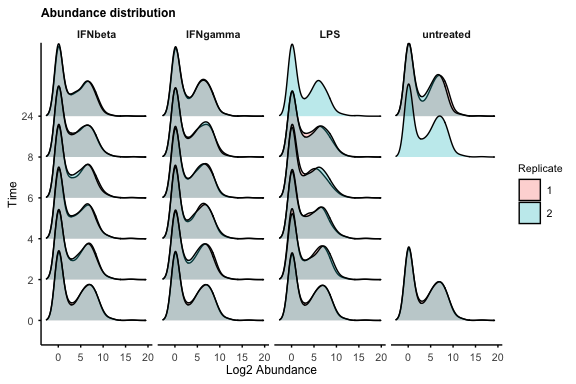
If distributions differ drastically, consider global normalisation (e.g., quantile, median) before using TiDEomics.
For data with missing values (e.g., proteomics),
plot_ID() and plot_missing() can be used to
check missingness patterns.
Normalisation to Time 0
normalise_to_start() subtracts the mean of the time-0
replicates (or the first available time point if the feature is missing
at time point 0). Use this when aiming to study relative
changes from baseline.
data_obj <- normalise_to_start(data_obj)When not to normalise: Use original data when
absolute abundance differences across groups are important (e.g.,
constitutively different baseline levels). Both assays (original and
time-0 normalised) are stored in the SummarizedExperiment
object and downstream functions allow to specify which to use for each
analysis (assay = 1 for original, assay = 2
for time-0 normalised).
Splitting groups and merging replicates
Use split_groups() to obtain group-specific
SummarizedExperiment objects and
merge_replicates() to average replicates for analyses /
visualisation that require single time series for features, including
calc_feature_property(), run_Trendy(),
plot_modules_v() and plot_modules_h().
data_obj_list <- split_groups(data_obj)
data_obj_merged_list <- merge_replicates(data_obj_list)
data_obj_merged <- merge_groups(data_obj_merged_list)Sample relationships (correlation, PCA, UMAP)
Correlation matrix can be plotted with plot_cor_matrix()
to check sample relationships and potential batch effects.
plot_cor_matrix(data_obj,
method = "spearman",
label_rep = TRUE, label_batch = TRUE,
cellwidth = 2, cellheight = 2
)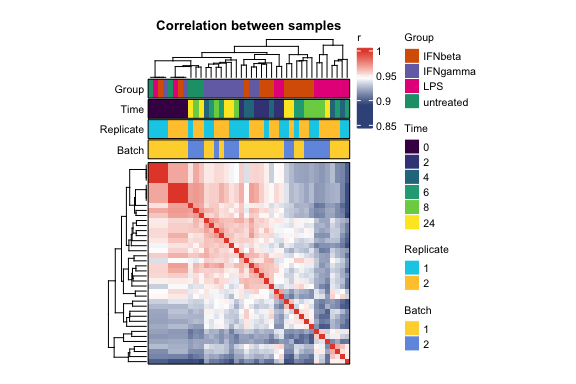
High within-replicate correlation and clear grouping by
Group or Time increase confidence in
downstream analysis. If batch effects are present, consider batch
correction before using TiDEomics.
There are multiple functions for PCA and UMAP:
Use
plot_pca()and visualise sample relationships and inspect loadings to identify features driving PCs.Use
plot_pca_3D()to visualise sample relationships in 3D.Use
PCAtools::eigencorplot()to correlate PCs with Group and Time.Use
plot_umap()for UMAP and setseedfor reproducibility.
PC <- plot_pca(data_obj,
plot = TRUE,
plot_screeplot = TRUE,
plot_loadings = FALSE,
plot_morepc = TRUE,
circle = FALSE,
morepc = 1:5
)
#> Warning: Using `size` aesthetic for lines was deprecated in ggplot2 3.4.0.
#> ℹ Please use `linewidth` instead.
#> ℹ The deprecated feature was likely used in the PCAtools package.
#> Please report the issue to the authors.
#> This warning is displayed once per session.
#> Call `lifecycle::last_lifecycle_warnings()` to see where this warning was
#> generated.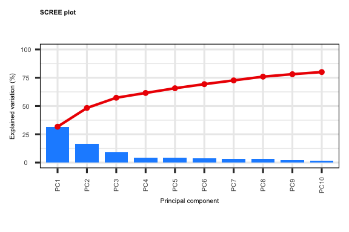
#> Warning: Using size for a discrete variable is not advised.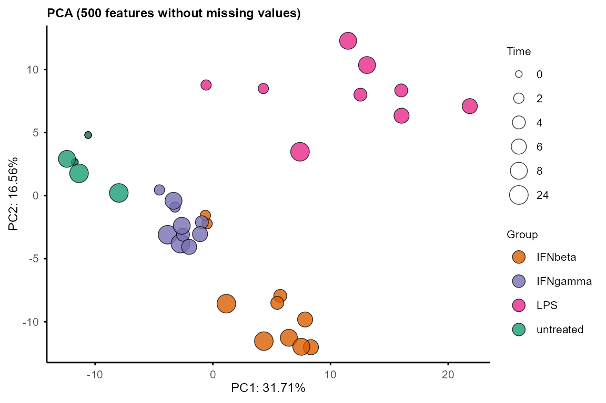
#> Scale for colour is already present.
#> Adding another scale for colour, which will replace the existing scale.
#> Scale for colour is already present.
#> Adding another scale for colour, which will replace the existing scale.
#> Scale for colour is already present.
#> Adding another scale for colour, which will replace the existing scale.
#> Scale for colour is already present.
#> Adding another scale for colour, which will replace the existing scale.
#> Scale for colour is already present.
#> Adding another scale for colour, which will replace the existing scale.
#> Scale for colour is already present.
#> Adding another scale for colour, which will replace the existing scale.
#> Scale for colour is already present.
#> Adding another scale for colour, which will replace the existing scale.
#> Scale for colour is already present.
#> Adding another scale for colour, which will replace the existing scale.
#> Scale for colour is already present.
#> Adding another scale for colour, which will replace the existing scale.
#> Scale for colour is already present.
#> Adding another scale for colour, which will replace the existing scale.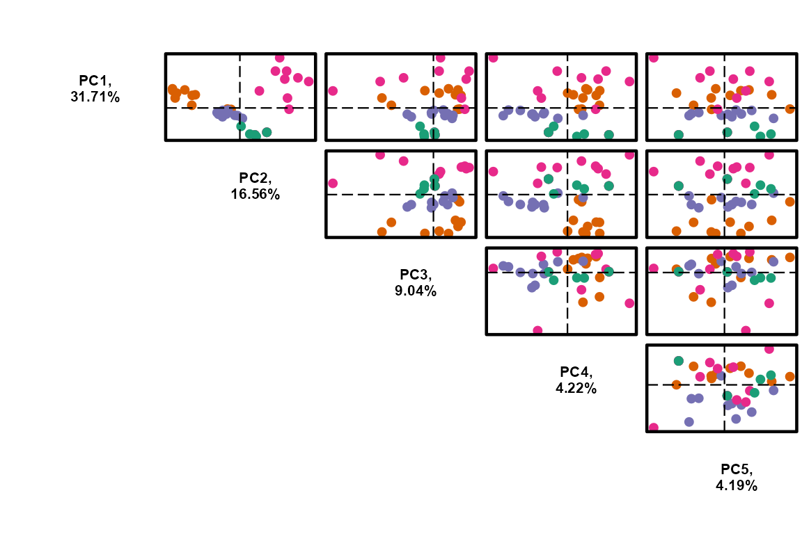
plot_pca_3D(PC, pcs = 1:3)
#> Warning: `line.width` does not currently support multiple values.
#> Warning: `line.width` does not currently support multiple values.
#> Warning: `line.width` does not currently support multiple values.
#> Warning: `line.width` does not currently support multiple values.Note: the 3D plot may not display properly in some html, but should work in an interactive R session.
PCAtools::eigencorplot(PC,
metavars = c("Group", "Time"),
components = paste0("PC", 1:5),
col = colorRampPalette(c("#3C5488FF", "white", "#E64B35FF"))(100),
colCorval = "black"
)
#> Warning in PCAtools::eigencorplot(PC, metavars = c("Group", "Time"), components
#> = paste0("PC", : Group is not numeric - please check the source data as
#> non-numeric variables will be coerced to numeric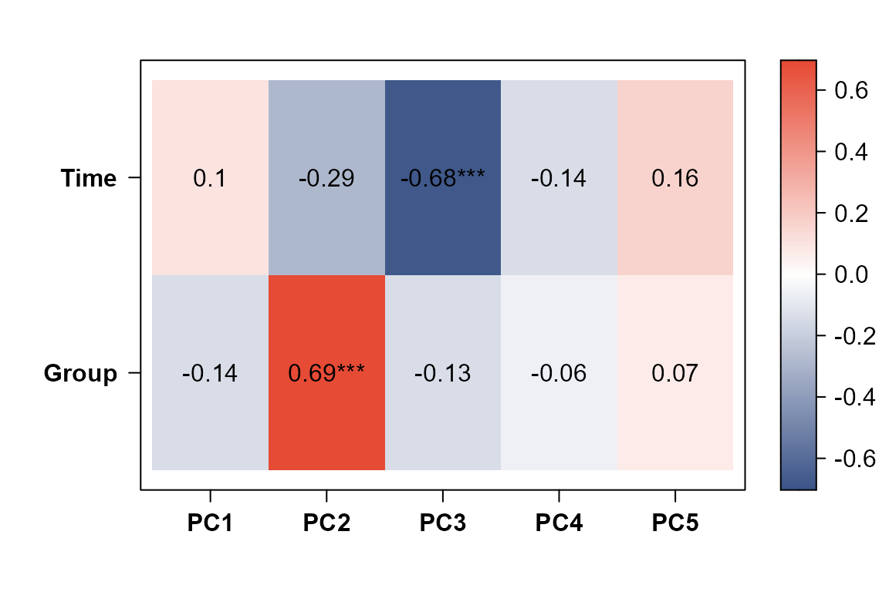
umap_layout <- plot_umap(data_obj, seed = 1234)
#> Using n_neighbors = 8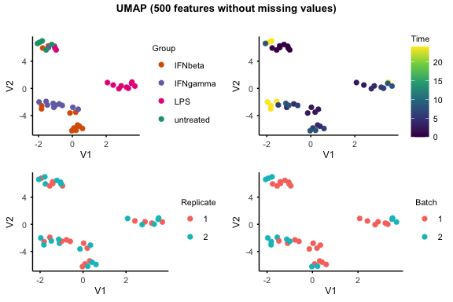
#> Warning: Using size for a discrete variable is not advised.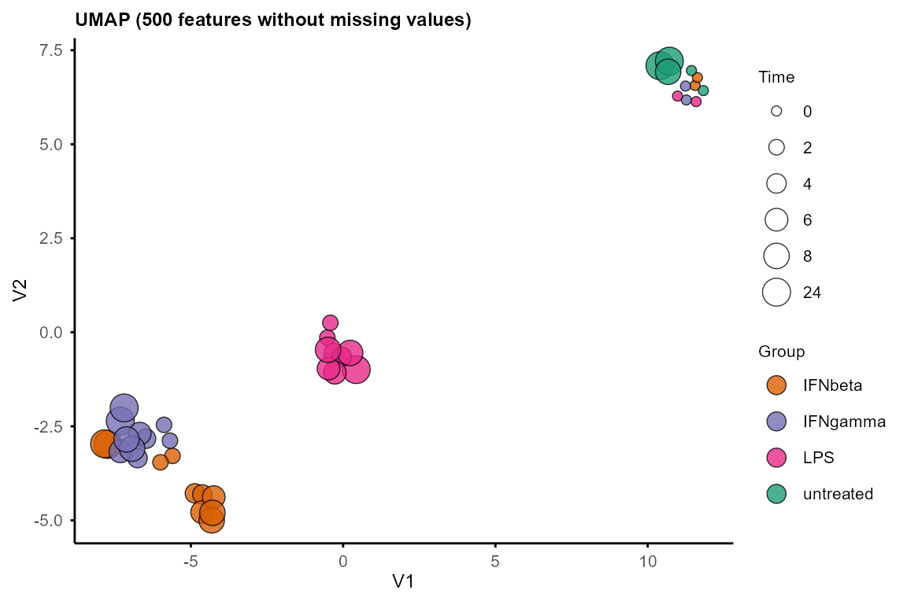
PCA and UMAP can also be performed separately on each group to explore within-group structure and dynamics.
By default, when plotting PCA by group, circles and arrows are added
to show the trajectory of samples along time course. Set
circle = FALSE or arrow = FALSE to remove
circles and arrows.
plot_umap_by_group(data_obj, seed = 1234)
#> Using n_neighbors = 5
#> Using n_neighbors = 5
#> Using n_neighbors = 5
#> Using n_neighbors = 4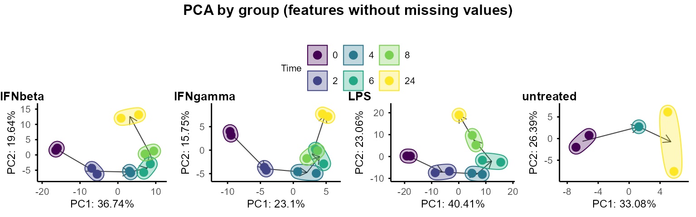
# same as plot_umap_by_group_list(data_obj_list)
plot_pca_by_group(data_obj, circle = TRUE, arrow = TRUE)
#> Warning: Removed 1 row containing missing values or values outside the scale range
#> (`geom_segment()`).
#> Removed 1 row containing missing values or values outside the scale range
#> (`geom_segment()`).
#> Removed 1 row containing missing values or values outside the scale range
#> (`geom_segment()`).
#> Removed 1 row containing missing values or values outside the scale range
#> (`geom_segment()`).
#> Removed 1 row containing missing values or values outside the scale range
#> (`geom_segment()`).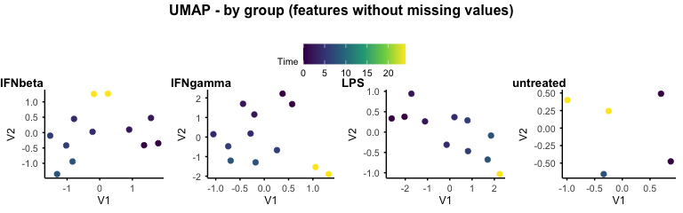
# same as plot_pca_by_group_list(data_obj_list, circle = TRUE, arrow = TRUE)Pairwise differential expression
The two DE functions for pairwise comparison between time points and groups are based on limma package (Ritchie et al. 2015).
Compares pairs of time points within each group.
Output: a list of all features, a list of only significant features.
Separate plotting function:
plot_DE_between_time()to summarise number of DE features per time point per group.
Compares pairs of groups at each time point.
Output: a list of all features, a list of only significant features, and line plots summarising number of DE features (can be removed by setting
plot = FALSE).
Common parameters for both functions:
assay: index of assay to use (1 = original, 2 = time0-normalised if available)filter: minimal number of non-NA observations/replicates per feature to be included in DE testing (e.g.,filter = 1means requiring features to have at least 1 non-NA value at both time points in that group).Default thresholds for DE are
p.adj < 0.05and|log2FC| > 1.
Please note that the example data only has two replicates per time point. More replicates are recommended for robust pairwise DE analysis.
DE_between_time():
DE_between_time_out <- DE_between_time(data_obj, assay = 1, filter = 1)
#> Comparing group IFNbeta time 2 to 0: keeping 500 of 500 features (100.0%)
#> Comparing group IFNbeta time 4 to 0: keeping 500 of 500 features (100.0%)
#> Comparing group IFNbeta time 6 to 0: keeping 500 of 500 features (100.0%)
#> Comparing group IFNbeta time 8 to 0: keeping 500 of 500 features (100.0%)
#> Comparing group IFNbeta time 24 to 0: keeping 500 of 500 features (100.0%)
#> Comparing group IFNbeta time 4 to 2: keeping 500 of 500 features (100.0%)
#> Comparing group IFNbeta time 6 to 2: keeping 500 of 500 features (100.0%)
#> Comparing group IFNbeta time 8 to 2: keeping 500 of 500 features (100.0%)
#> Comparing group IFNbeta time 24 to 2: keeping 500 of 500 features (100.0%)
#> Comparing group IFNbeta time 6 to 4: keeping 500 of 500 features (100.0%)
#> Comparing group IFNbeta time 8 to 4: keeping 500 of 500 features (100.0%)
#> Comparing group IFNbeta time 24 to 4: keeping 500 of 500 features (100.0%)
#> Comparing group IFNbeta time 8 to 6: keeping 500 of 500 features (100.0%)
#> Comparing group IFNbeta time 24 to 6: keeping 500 of 500 features (100.0%)
#> Comparing group IFNbeta time 24 to 8: keeping 500 of 500 features (100.0%)
#> Comparing group IFNgamma time 2 to 0: keeping 500 of 500 features (100.0%)
#> Comparing group IFNgamma time 4 to 0: keeping 500 of 500 features (100.0%)
#> Comparing group IFNgamma time 6 to 0: keeping 500 of 500 features (100.0%)
#> Comparing group IFNgamma time 8 to 0: keeping 500 of 500 features (100.0%)
#> Comparing group IFNgamma time 24 to 0: keeping 500 of 500 features (100.0%)
#> Comparing group IFNgamma time 4 to 2: keeping 500 of 500 features (100.0%)
#> Comparing group IFNgamma time 6 to 2: keeping 500 of 500 features (100.0%)
#> Comparing group IFNgamma time 8 to 2: keeping 500 of 500 features (100.0%)
#> Comparing group IFNgamma time 24 to 2: keeping 500 of 500 features (100.0%)
#> Comparing group IFNgamma time 6 to 4: keeping 500 of 500 features (100.0%)
#> Comparing group IFNgamma time 8 to 4: keeping 500 of 500 features (100.0%)
#> Comparing group IFNgamma time 24 to 4: keeping 500 of 500 features (100.0%)
#> Comparing group IFNgamma time 8 to 6: keeping 500 of 500 features (100.0%)
#> Comparing group IFNgamma time 24 to 6: keeping 500 of 500 features (100.0%)
#> Comparing group IFNgamma time 24 to 8: keeping 500 of 500 features (100.0%)
#> Comparing group LPS time 2 to 0: keeping 500 of 500 features (100.0%)
#> Comparing group LPS time 4 to 0: keeping 500 of 500 features (100.0%)
#> Comparing group LPS time 6 to 0: keeping 500 of 500 features (100.0%)
#> Comparing group LPS time 8 to 0: keeping 500 of 500 features (100.0%)
#> Comparing group LPS time 24 to 0: keeping 500 of 500 features (100.0%)
#> Comparing group LPS time 4 to 2: keeping 500 of 500 features (100.0%)
#> Comparing group LPS time 6 to 2: keeping 500 of 500 features (100.0%)
#> Comparing group LPS time 8 to 2: keeping 500 of 500 features (100.0%)
#> Comparing group LPS time 24 to 2: keeping 500 of 500 features (100.0%)
#> Comparing group LPS time 6 to 4: keeping 500 of 500 features (100.0%)
#> Comparing group LPS time 8 to 4: keeping 500 of 500 features (100.0%)
#> Comparing group LPS time 24 to 4: keeping 500 of 500 features (100.0%)
#> Comparing group LPS time 8 to 6: keeping 500 of 500 features (100.0%)
#> Comparing group LPS time 24 to 6: keeping 500 of 500 features (100.0%)
#> Comparing group LPS time 24 to 8: keeping 500 of 500 features (100.0%)
#> Comparing group untreated time 8 to 0: keeping 500 of 500 features (100.0%)
#> Comparing group untreated time 24 to 0: keeping 500 of 500 features (100.0%)
#> Comparing group untreated time 24 to 8: keeping 500 of 500 features (100.0%)#> Feature Comparison Group Cond1 Cond2 RNA_IFNbeta_0h_R1_1
#> 1 1700003E16Rik t2-t0 IFNbeta 0 2 1.000000
#> 2 1700016A09Rik t2-t0 IFNbeta 0 2 0.000000
#> 3 1700017L05Rik t2-t0 IFNbeta 0 2 0.000000
#> 4 1700028K03Rik t2-t0 IFNbeta 0 2 0.000000
#> 5 1700100I10Rik t2-t0 IFNbeta 0 2 0.000000
#> 6 2900005J15Rik t2-t0 IFNbeta 0 2 3.906891
#> RNA_IFNbeta_0h_R2_1 RNA_IFNbeta_2h_R1_1 RNA_IFNbeta_2h_R2_1 logFC
#> 1 0.000000 0.000000 0 -0.500000
#> 2 0.000000 0.000000 0 0.000000
#> 3 0.000000 0.000000 0 0.000000
#> 4 0.000000 0.000000 0 0.000000
#> 5 0.000000 0.000000 0 0.000000
#> 6 4.954196 1.584963 2 -2.638062
#> P.Value adj.P.Val
#> 1 0.37354008 0.6997161
#> 2 1.00000000 1.0000000
#> 3 1.00000000 1.0000000
#> 4 1.00000000 1.0000000
#> 5 1.00000000 1.0000000
#> 6 0.02497426 0.2656975#> Feature Comparison Group Cond1 Cond2 logFC adj.P.Val
#> 1 Snord83b t2-t0 IFNbeta 0 2 -1.584963 0.0005228236
plot_DE_between_time(data_obj,
de_list = DE_between_time_out$de_list,
fontsize = 8, value = FALSE, nrow = 1, heatmap_width = 3
)
#> Warning: The input is a data frame-like object, convert it to a matrix.
#> Warning: The input is a data frame-like object, convert it to a matrix.
#> Warning: The input is a data frame-like object, convert it to a matrix.
#> Warning: The input is a data frame-like object, convert it to a matrix.
#> Warning: Note: not all columns in the data frame are numeric. The data frame
#> will be converted into a character matrix.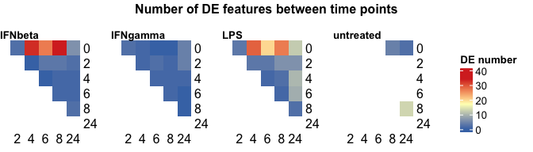
DE_between_group():
DE_between_group_out <- DE_between_group(data_obj, assay = 2, filter = 1)
#> Comparing group IFNgamma to IFNbeta at Time 0: keeping 500 of 500 features (100.0%)
#> Warning: Zero sample variances detected, have been offset away from zero
#> Comparing group IFNgamma to IFNbeta at Time 2: keeping 500 of 500 features (100.0%)
#> Warning: Zero sample variances detected, have been offset away from zero
#> Comparing group IFNgamma to IFNbeta at Time 4: keeping 500 of 500 features (100.0%)
#> Warning: Zero sample variances detected, have been offset away from zero
#> Comparing group IFNgamma to IFNbeta at Time 6: keeping 500 of 500 features (100.0%)
#> Warning: Zero sample variances detected, have been offset away from zero
#> Comparing group IFNgamma to IFNbeta at Time 8: keeping 500 of 500 features (100.0%)
#> Warning: Zero sample variances detected, have been offset away from zero
#> Comparing group IFNgamma to IFNbeta at Time 24: keeping 500 of 500 features (100.0%)
#> Warning: Zero sample variances detected, have been offset away from zero
#> Comparing group LPS to IFNbeta at Time 0: keeping 500 of 500 features (100.0%)
#> Warning: Zero sample variances detected, have been offset away from zero
#> Comparing group LPS to IFNbeta at Time 2: keeping 500 of 500 features (100.0%)
#> Warning: Zero sample variances detected, have been offset away from zero
#> Comparing group LPS to IFNbeta at Time 4: keeping 500 of 500 features (100.0%)
#> Warning: Zero sample variances detected, have been offset away from zero
#> Comparing group LPS to IFNbeta at Time 6: keeping 500 of 500 features (100.0%)
#> Warning: Zero sample variances detected, have been offset away from zero
#> Comparing group LPS to IFNbeta at Time 8: keeping 500 of 500 features (100.0%)
#> Warning: Zero sample variances detected, have been offset away from zero
#> Comparing group LPS to IFNbeta at Time 24: keeping 500 of 500 features (100.0%)
#> Warning: Zero sample variances detected, have been offset away from zero
#> Comparing group untreated to IFNbeta at Time 0: keeping 500 of 500 features (100.0%)
#> Warning: Zero sample variances detected, have been offset away from zero
#> Comparing group untreated to IFNbeta at Time 8: keeping 500 of 500 features (100.0%)
#> Warning: Zero sample variances detected, have been offset away from zero
#> Comparing group untreated to IFNbeta at Time 24: keeping 500 of 500 features (100.0%)
#> Warning: Zero sample variances detected, have been offset away from zero
#> Comparing group IFNbeta to IFNgamma at Time 0: keeping 500 of 500 features (100.0%)
#> Warning: Zero sample variances detected, have been offset away from zero
#> Comparing group IFNbeta to IFNgamma at Time 2: keeping 500 of 500 features (100.0%)
#> Warning: Zero sample variances detected, have been offset away from zero
#> Comparing group IFNbeta to IFNgamma at Time 4: keeping 500 of 500 features (100.0%)
#> Warning: Zero sample variances detected, have been offset away from zero
#> Comparing group IFNbeta to IFNgamma at Time 6: keeping 500 of 500 features (100.0%)
#> Warning: Zero sample variances detected, have been offset away from zero
#> Comparing group IFNbeta to IFNgamma at Time 8: keeping 500 of 500 features (100.0%)
#> Warning: Zero sample variances detected, have been offset away from zero
#> Comparing group IFNbeta to IFNgamma at Time 24: keeping 500 of 500 features (100.0%)
#> Warning: Zero sample variances detected, have been offset away from zero
#> Comparing group LPS to IFNgamma at Time 0: keeping 500 of 500 features (100.0%)
#> Warning: Zero sample variances detected, have been offset away from zero
#> Comparing group LPS to IFNgamma at Time 2: keeping 500 of 500 features (100.0%)
#> Warning: Zero sample variances detected, have been offset away from zero
#> Comparing group LPS to IFNgamma at Time 4: keeping 500 of 500 features (100.0%)
#> Warning: Zero sample variances detected, have been offset away from zero
#> Comparing group LPS to IFNgamma at Time 6: keeping 500 of 500 features (100.0%)
#> Warning: Zero sample variances detected, have been offset away from zero
#> Comparing group LPS to IFNgamma at Time 8: keeping 500 of 500 features (100.0%)
#> Warning: Zero sample variances detected, have been offset away from zero
#> Comparing group LPS to IFNgamma at Time 24: keeping 500 of 500 features (100.0%)
#> Warning: Zero sample variances detected, have been offset away from zero
#> Comparing group untreated to IFNgamma at Time 0: keeping 500 of 500 features (100.0%)
#> Warning: Zero sample variances detected, have been offset away from zero
#> Comparing group untreated to IFNgamma at Time 8: keeping 500 of 500 features (100.0%)
#> Warning: Zero sample variances detected, have been offset away from zero
#> Comparing group untreated to IFNgamma at Time 24: keeping 500 of 500 features (100.0%)
#> Warning: Zero sample variances detected, have been offset away from zero
#> Comparing group IFNbeta to LPS at Time 0: keeping 500 of 500 features (100.0%)
#> Warning: Zero sample variances detected, have been offset away from zero
#> Comparing group IFNbeta to LPS at Time 2: keeping 500 of 500 features (100.0%)
#> Warning: Zero sample variances detected, have been offset away from zero
#> Comparing group IFNbeta to LPS at Time 4: keeping 500 of 500 features (100.0%)
#> Warning: Zero sample variances detected, have been offset away from zero
#> Comparing group IFNbeta to LPS at Time 6: keeping 500 of 500 features (100.0%)
#> Warning: Zero sample variances detected, have been offset away from zero
#> Comparing group IFNbeta to LPS at Time 8: keeping 500 of 500 features (100.0%)
#> Warning: Zero sample variances detected, have been offset away from zero
#> Comparing group IFNbeta to LPS at Time 24: keeping 500 of 500 features (100.0%)
#> Warning: Zero sample variances detected, have been offset away from zero
#> Comparing group IFNgamma to LPS at Time 0: keeping 500 of 500 features (100.0%)
#> Warning: Zero sample variances detected, have been offset away from zero
#> Comparing group IFNgamma to LPS at Time 2: keeping 500 of 500 features (100.0%)
#> Warning: Zero sample variances detected, have been offset away from zero
#> Comparing group IFNgamma to LPS at Time 4: keeping 500 of 500 features (100.0%)
#> Warning: Zero sample variances detected, have been offset away from zero
#> Comparing group IFNgamma to LPS at Time 6: keeping 500 of 500 features (100.0%)
#> Warning: Zero sample variances detected, have been offset away from zero
#> Comparing group IFNgamma to LPS at Time 8: keeping 500 of 500 features (100.0%)
#> Warning: Zero sample variances detected, have been offset away from zero
#> Comparing group IFNgamma to LPS at Time 24: keeping 500 of 500 features (100.0%)
#> Warning: Zero sample variances detected, have been offset away from zero
#> Comparing group untreated to LPS at Time 0: keeping 500 of 500 features (100.0%)
#> Warning: Zero sample variances detected, have been offset away from zero
#> Comparing group untreated to LPS at Time 8: keeping 500 of 500 features (100.0%)
#> Warning: Zero sample variances detected, have been offset away from zero
#> Comparing group untreated to LPS at Time 24: keeping 500 of 500 features (100.0%)
#> Warning: Zero sample variances detected, have been offset away from zero
#> Comparing group IFNbeta to untreated at Time 0: keeping 500 of 500 features (100.0%)
#> Warning: Zero sample variances detected, have been offset away from zero
#> Comparing group IFNbeta to untreated at Time 8: keeping 500 of 500 features (100.0%)
#> Warning: Zero sample variances detected, have been offset away from zero
#> Comparing group IFNbeta to untreated at Time 24: keeping 500 of 500 features (100.0%)
#> Warning: Zero sample variances detected, have been offset away from zero
#> Comparing group IFNgamma to untreated at Time 0: keeping 500 of 500 features (100.0%)
#> Warning: Zero sample variances detected, have been offset away from zero
#> Comparing group IFNgamma to untreated at Time 8: keeping 500 of 500 features (100.0%)
#> Warning: Zero sample variances detected, have been offset away from zero
#> Comparing group IFNgamma to untreated at Time 24: keeping 500 of 500 features (100.0%)
#> Warning: Zero sample variances detected, have been offset away from zero
#> Comparing group LPS to untreated at Time 0: keeping 500 of 500 features (100.0%)
#> Warning: Zero sample variances detected, have been offset away from zero
#> Comparing group LPS to untreated at Time 8: keeping 500 of 500 features (100.0%)
#> Warning: Zero sample variances detected, have been offset away from zero
#> Comparing group LPS to untreated at Time 24: keeping 500 of 500 features (100.0%)
#> Warning: Zero sample variances detected, have been offset away from zero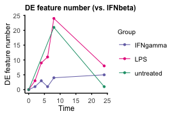
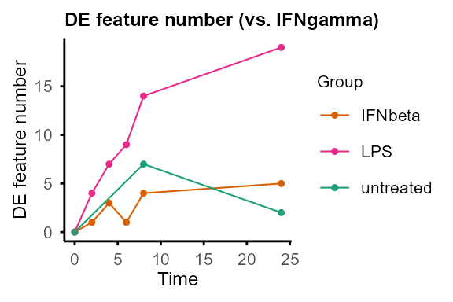
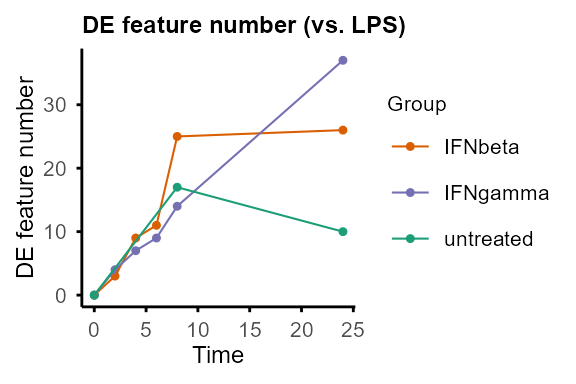
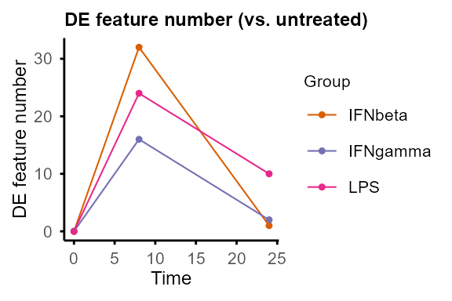
#> Feature Comparison Time Cond1 Cond2
#> 1 1700003E16Rik IFNgamma-untreated 24 untreated IFNgamma
#> 2 1700016A09Rik IFNgamma-untreated 24 untreated IFNgamma
#> 3 1700017L05Rik IFNgamma-untreated 24 untreated IFNgamma
#> 4 1700028K03Rik IFNgamma-untreated 24 untreated IFNgamma
#> 5 1700100I10Rik IFNgamma-untreated 24 untreated IFNgamma
#> 6 2900005J15Rik IFNgamma-untreated 24 untreated IFNgamma
#> RNA_untreated_24h_R1_2 RNA_untreated_24h_R2_2 RNA_IFNgamma_24h_R1_2
#> 1 -0.5000000 -0.5000000 -0.5000000
#> 2 0.0000000 1.0000000 0.0000000
#> 3 0.0000000 0.0000000 0.0000000
#> 4 1.0000000 0.0000000 0.0000000
#> 5 0.0000000 0.0000000 0.0000000
#> 6 -0.7301037 0.0930185 -0.9711118
#> RNA_IFNgamma_24h_R2_2 logFC P.Value adj.P.Val
#> 1 -0.500000 -1.665335e-16 1.0000000 1.0000000
#> 2 1.000000 0.000000e+00 1.0000000 1.0000000
#> 3 0.000000 0.000000e+00 1.0000000 1.0000000
#> 4 0.000000 -5.000000e-01 0.3712106 0.7365967
#> 5 0.000000 0.000000e+00 1.0000000 1.0000000
#> 6 -1.845581 -1.089804e+00 0.1636461 0.6234187#> Feature Comparison Time Cond1 Cond2 logFC adj.P.Val
#> 1 1700003E16Rik IFNgamma-untreated 8 untreated IFNgamma -1.000000 0.01628919
#> 2 3110009E18Rik IFNgamma-untreated 8 untreated IFNgamma -1.169925 0.01628919
#> 3 4930447F24Rik IFNgamma-untreated 8 untreated IFNgamma -1.000000 0.01628919
#> 4 Acta1 IFNgamma-untreated 8 untreated IFNgamma -2.321928 0.01628919
#> 5 Cd69 IFNgamma-untreated 8 untreated IFNgamma 4.906762 0.01799269
#> 6 Ctsh IFNgamma-untreated 8 untreated IFNgamma 1.112589 0.03569877Output of DE_between_group()and
DE_between_time() can be plotted with
plot_volcano() to visualise DE features of selected
group(s) and time point(s).
plot_volcano(DE_between_group_out,
group1 = "untreated", group2 = "IFNgamma", time = 24,
logFC_thres = 0.5, adjP_thres = 0.05, label = TRUE)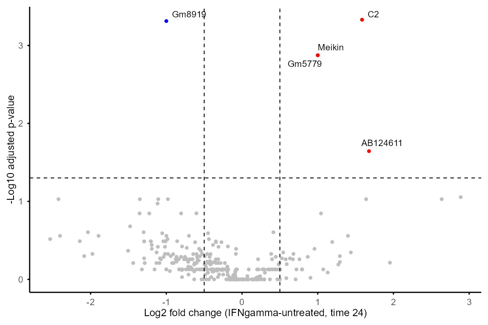
Feature properties and classification
calc_feature_property() computes per-feature
properties:
P_trendcalculated withrandtests::bartels.rank.test()to test for non-randomness of the time profile (i.e., whether the feature shows a significant overall trend across time points).Max_FC: maximum fold change across time points, calculated as the difference between the maximum and minimum mean abundance across time points. This captures the overall magnitude of change across the time course, regardless of the specific time points at which changes occur.Max_FC_time: the difference between time points with maximum and minimum mean abundance, providing information about the direction (up or down) and duration of changing.Exp_threshold: user-set value threshold for a feature to be considered expressed in a sample. This can be used to filter features based on expression level, e.g. settingthreshold = 0means that only values > 0 (log2(raw count + 1) > 0, i.e. raw count > 0) are considered expressed. The default is NULL, which means all non-NA values are considered expressed, e.g. for proteomics data.T_total,T_expandExp_ratio: number of total time points, number of expressed time points with values >Exp_threshold(Or non-NA values ifthreshold = NULL), and proportion of expressed time points, respectively, which can be used to filter features based on completeness or expression level.
The property values can be used to classify features into different
categories (e.g., non-random vs. random, differentially expressed
vs. stable) for downstream analysis and interpretation. For example,
features with P_trend < 0.05 and
Max_FC >= 1 can be candidates for non-randomly
overall-changing DE features.
Note:
Input should be the mean of replicates at each time point, output of
merge_replicates().The function is set to require at least 3 values > threshold to calculate
P_trend.
data_obj_merged_list <- calc_feature_property(data_obj_merged_list,
threshold = 0)
property_random_fc <- summarise_feature_property(data_obj_merged_list)
head(property_random_fc)#> Feature Group Exp_threshold T_exp T_total P_trend Max_FC
#> 1 1700003E16Rik IFNbeta 0 1 6 NA 0.5000000
#> 2 1700016A09Rik IFNbeta 0 2 6 NA 0.5000000
#> 3 1700017L05Rik IFNbeta 0 0 6 NA NA
#> 4 1700028K03Rik IFNbeta 0 2 6 NA 1.0000000
#> 5 1700100I10Rik IFNbeta 0 1 6 NA 0.7924813
#> 6 2900005J15Rik IFNbeta 0 5 6 0.09452103 4.4305435
#> Max_FC_time Exp_ratio
#> 1 -1 0.1666667
#> 2 4 0.3333333
#> 3 NA 0.0000000
#> 4 5 0.3333333
#> 5 4 0.1666667
#> 6 -3 0.8333333Features expressed in only a subset of groups can be extracted with
group_specific_features() based on the output table of
summarise_feature_property().
group_specific_features(property_random_fc, groups = c("untreated"),
genename = FALSE, GO = FALSE
)
#> Filtering criteria: >=50% values >0 in >=1 of groups: untreated#> [1] "4930447F24Rik" "Itga7" "Kcnj16" "Otos"
#> [5] "Sult4a1" "Umodl1"Segmented regression analysis
run_Trendy fits segmented linear models to the time
course for each feature to estimate breakpoints with Trendy package
(Bacher et al. 2018), see Trendy
documentation for details.
Notes:
The function requires complete input (no NA). When data contains missing values (e.g. proteomics), use
impute_groups()to impute with group-specific minimum value, or restrict to features with complete data.If
featureis not specified, the function will run on all features filtered by expression / missing rate, which requires runningcalc_feature_property()beforeimpute_groups().Number of time points needed = [# segments] * [min number of samples in a segment]. For example, as below, when # segments = 2 (maxK = 1) and minNumInSeg = 2, at least 4 time points are needed.
data_obj_merged_imp_list <- impute_groups(data_obj_merged_list)A subset of features is used for demonstration as
run_Trendy() can be time-consuming.
set.seed(1234)
random_features <- sample(rownames(data_obj_merged_imp_list[[1]]), 50)
example_res_list <- run_Trendy(data_obj_merged_imp_list,
feature = random_features,
minExp = 0.5,
maxK = 1,
minNumInSeg = 2, meanCut = 0, NCores = 2
)
#> Max number of breakpoints: 1
#> Min mean expression: 0
#> Min number of samples in each segment: 2
#> Running Trendy for group: IFNbeta
#> Using 50 specified features present in the data.
#> Warning in BiocParallel::MulticoreParam(workers = NCores): MulticoreParam() not
#> supported on Windows, use SnowParam()#> breakpoint estimate(s): 9.519174
#> breakpoint estimate(s): 8.885903
#> breakpoint estimate(s): 8.885903
#> Running Trendy for group: IFNgamma
#> Using 50 specified features present in the data.
#> Warning in BiocParallel::MulticoreParam(workers = NCores): MulticoreParam() not
#> supported on Windows, use SnowParam()#> breakpoint estimate(s): 8.885903
#> breakpoint estimate(s): 9.519174
#> breakpoint estimate(s): 8.885903
#> breakpoint estimate(s): 9.519174
#> breakpoint estimate(s): 9.519174
#> breakpoint estimate(s): 9.519174
#> Running Trendy for group: LPS
#> Using 50 specified features present in the data.
#> Warning in BiocParallel::MulticoreParam(workers = NCores): MulticoreParam() not
#> supported on Windows, use SnowParam()#> breakpoint estimate(s): 9.519174
#> Running Trendy for group: untreated
#> Trendy analysis is not performed for group untreated: number of time points (3) less than 2 * minNumInSegUse plot_segments()to plot the fitted segments and
breakpoints for selected features.
plot_segments(data_obj_merged_imp_list,
example_res_list,
feature = c("Zfp639", "Tk1"), # example features
ylab = "Log2 (raw count + 1)"
)
#> Plotting segmented regression for group: IFNbeta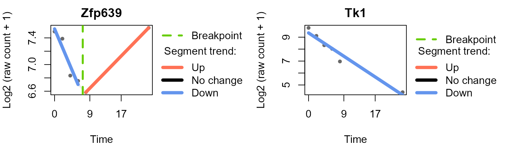
#> Plotting segmented regression for group: IFNgamma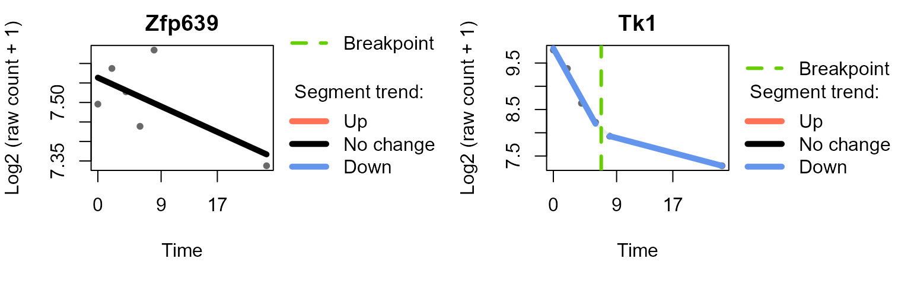
#> Plotting segmented regression for group: LPS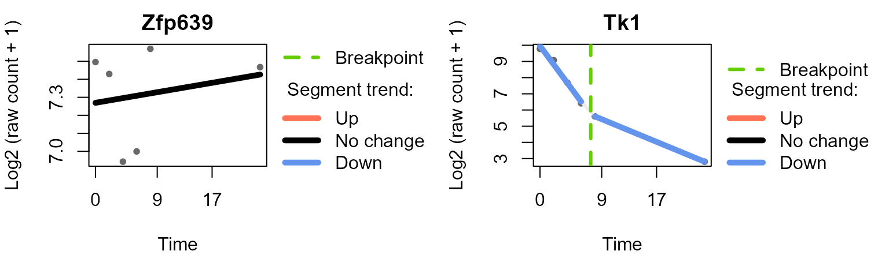
Plot the distribution of breakpoints across time points with
plot_breakpoints() in each group, and summarise the
temporal patterns (combination of trends of each segment) of features
with summarise_Trendy() and
extract_segment_trends().
plot_breakpoints(example_res_list)
#> Warning in (function (..., deparse.level = 1) : number of columns of result is
#> not a multiple of vector length (arg 3)
#> Warning in (function (..., deparse.level = 1) : number of columns of result is
#> not a multiple of vector length (arg 7)
#> Warning in (function (..., deparse.level = 1) : number of columns of result is
#> not a multiple of vector length (arg 9)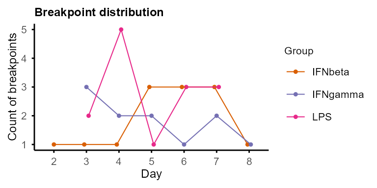
trendy_summary <- summarise_Trendy(example_res_list)
#> Warning in (function (..., deparse.level = 1) : number of columns of result is
#> not a multiple of vector length (arg 3)
#> Warning in (function (..., deparse.level = 1) : number of columns of result is
#> not a multiple of vector length (arg 7)
#> Warning in (function (..., deparse.level = 1) : number of columns of result is
#> not a multiple of vector length (arg 9)
trendy_summary %>% head()#> Group Feature Segment1.Slope Segment2.Slope Segment1.Trend
#> IFNbeta.Epn2 IFNbeta Epn2 -0.7499700 0.1615600 down
#> IFNbeta.Ska1 IFNbeta Ska1 -0.4762800 -0.1115800 down
#> IFNbeta.Tk1 IFNbeta Tk1 -0.2165968 NA down
#> IFNbeta.Aunip IFNbeta Aunip -1.0743000 -0.0666780 down
#> IFNbeta.Gmeb1 IFNbeta Gmeb1 -0.1286400 -0.0034104 down
#> IFNbeta.Ncdn IFNbeta Ncdn -0.3442400 0.0387170 down
#> Segment2.Trend Segment1.Pvalue Segment2.Pvalue Breakpoint
#> IFNbeta.Epn2 up 0.0197197791 0.03607479 6.374062
#> IFNbeta.Ska1 down 0.0509625300 0.04419412 4.815924
#> IFNbeta.Tk1 <NA> 0.0006053725 NA NA
#> IFNbeta.Aunip down 0.0618339689 0.08776893 2.346122
#> IFNbeta.Gmeb1 stable 0.0592481304 0.30678219 4.142336
#> IFNbeta.Ncdn stable 0.0732773034 0.12722374 5.139547
#> AdjustedR2 X0.Trend X2.Trend X4.Trend X6.Trend X8.Trend X24.Trend
#> IFNbeta.Epn2 0.9864273 -1 -1 -1 -1 1 1
#> IFNbeta.Ska1 0.9797872 -1 -1 -1 -1 -1 -1
#> IFNbeta.Tk1 0.9501150 -1 -1 -1 -1 -1 -1
#> IFNbeta.Aunip 0.9497074 -1 -1 -1 -1 -1 -1
#> IFNbeta.Gmeb1 0.9171326 -1 -1 -1 0 0 0
#> IFNbeta.Ncdn 0.8857370 -1 -1 -1 0 0 0
#> Pattern
#> IFNbeta.Epn2 down_up
#> IFNbeta.Ska1 down_down
#> IFNbeta.Tk1 down
#> IFNbeta.Aunip down_down
#> IFNbeta.Gmeb1 down_stable
#> IFNbeta.Ncdn down_stable
trendy_list <- extract_segment_trends(trendy_summary)
trendy_list$IFNbeta#> $down_up
#> [1] "Epn2" "Zfp639" "Trub1" "Zfp109"
#>
#> $down_down
#> [1] "Ska1" "Aunip"
#>
#> $down
#> [1] "Tk1" "Prkcb"
#>
#> $down_stable
#> [1] "Gmeb1" "Ncdn" "Fbxo3" "Rrs1"
#>
#> $up
#> [1] "A930001C03Rik" "Pmaip1"
#>
#> $stable_stable
#> [1] "Gle1" "Atp5mk" "Gm12251"Variance decomposition
Variance of each protein is decomposed into Time,
Group and Residual to characterise their
differential expression.
High
Timecontribution: time-dependent features, dynamic along time course consistently across groups. May be good candidates forrun_Trendy()or other time-focused analysis.High
Groupcontribution: group-dependent features, stable along time but differentially expressed between groups. May be baseline biological markers.High
Residual: noisy, consider excluding for further analysis (e.g. WGCNA) or interpretation.
The function decomp_variance() is based on
PALMO::lmeVariance()(Vasaikar et al. 2023) to return a
data.frame of variance decomposition.
# filter genes for variance decomposition:
# at least 50% values > 0 (raw count > 0) in at least 2 groups
decomp_filter_genes <- group_specific_features(property_random_fc,
filter_ratio = 0.5,
group_pct = 2 / 4,
GO = FALSE, genename = FALSE
)
#> Filtering criteria: >=50% values >0 in >=2 of groups: IFNbeta, IFNgamma, LPS, untreated
var_decomp <- decomp_variance(data_obj,
features = decomp_filter_genes,
variables = c("Time", "Group"), # default
assay = 1, core = 2
)
plot_variance(var_decomp, rank = "Time", top_n = 20)
#> Features not specified. Plotting top 20 features ranked by Time.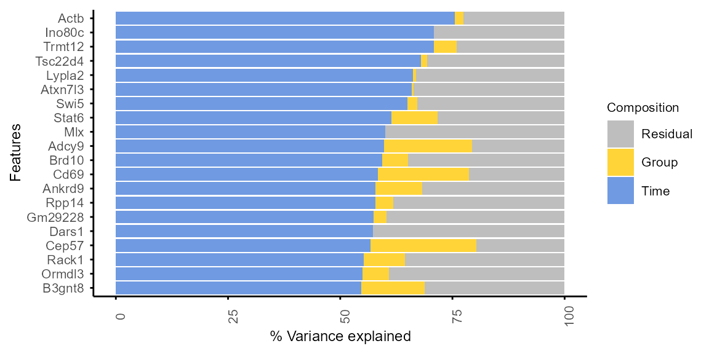
plot_variance(var_decomp, rank = "Group", top_n = 20)
#> Features not specified. Plotting top 20 features ranked by Group.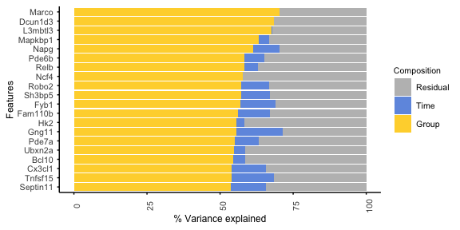
WGCNA (co-expression modules)
Detailed tutorials of WGCNA (Langfelder and Horvath 2008, 2012) can be found on GitHub, and the following is a brief demonstration of how to prepare input and run WGCNA with TiDEomics functions.
Filtering strategies:
Remove features with too many missing values, with
WGCNA::goodGenes()included in theprepare_WGCNA()function, or pre-filter with the calculated feature property (output ofcalc_feature_property()andsummarise_feature_property()).Remove features flagged as random (no trend) across groups, based on the calculated feature property (e.g., remove features with
P_trend >= 0.05in all groups).Use residual variance to exclude noisy features (e.g., keep features with Residual < Q3).
It is not recommended to filter by differential expression before WGCNA, see WGCNA package FAQ.
# Example filtering by residual variance < Q3
var_res_q3 <- quantile(var_decomp$Residual, 0.75, na.rm = TRUE)
filter_wgcna <- var_decomp %>% dplyr::filter(Residual < var_res_q3) %>%
dplyr::pull(Feature)
data_obj_wgcna <- data_obj[filter_wgcna, ]Prepare data format and choose power:
Check the scale-free topology fit indices to confirm that the chosen power is appropriate.
Reasonable powers are less than 15 for unsigned or signed hybrid networks, and less than 30 for signed networks, to reach scale-free topology fit index > 0.8, and mean connectivity (mean.k) not too high (in the hundreds or above). See WGCNA package FAQ for details.
WGCNA_input <- prepare_WGCNA(data_obj_wgcna, assay = 2,
powers = seq(1, 30),
networkType = "signed", RsquaredCut = 0.8
)#> Allowing multi-threading with up to 24 threads.
#> pickSoftThreshold: will use block size 258.
#> pickSoftThreshold: calculating connectivity for given powers...
#> ..working on genes 1 through 258 of 258
#> Power SFT.R.sq slope truncated.R.sq mean.k. median.k. max.k.
#> 1 1 0.608000 3.5000 0.59600 147.000 154.000 172.00
#> 2 2 0.442000 1.3100 0.31000 92.900 98.500 125.00
#> 3 3 0.188000 0.4220 -0.04460 62.700 65.900 95.50
#> 4 4 0.000653 0.0133 -0.00791 44.400 45.900 75.10
#> 5 5 0.037700 -0.0970 0.50100 32.600 32.700 60.50
#> 6 6 0.098300 -0.1880 0.77100 24.500 23.600 50.10
#> 7 7 0.152000 -0.2800 0.85700 18.900 17.500 42.00
#> 8 8 0.280000 -0.4080 0.91400 14.800 13.100 35.60
#> 9 9 0.443000 -0.5790 0.92500 11.700 10.100 30.40
#> 10 10 0.440000 -0.7510 0.82400 9.420 7.870 26.20
#> 11 11 0.522000 -0.8220 0.89800 7.660 6.160 22.70
#> 12 12 0.608000 -0.9140 0.90700 6.290 4.940 19.80
#> 13 13 0.661000 -0.9840 0.91000 5.210 4.020 17.30
#> 14 14 0.719000 -1.0600 0.93900 4.350 3.350 15.20
#> 15 15 0.733000 -1.1500 0.92500 3.660 2.790 13.40
#> 16 16 0.767000 -1.1600 0.95100 3.100 2.330 11.90
#> 17 17 0.791000 -1.1700 0.97000 2.640 1.920 10.60
#> 18 18 0.792000 -1.2500 0.94700 2.260 1.610 9.41
#> 19 19 0.801000 -1.2400 0.94600 1.940 1.370 8.41
#> 20 20 0.811000 -1.2500 0.93100 1.680 1.170 7.53
#> 21 21 0.825000 -1.2600 0.93800 1.460 0.982 6.75
#> 22 22 0.829000 -1.2600 0.94200 1.270 0.834 6.07
#> 23 23 0.852000 -1.2600 0.95500 1.110 0.712 5.47
#> 24 24 0.220000 -2.7400 0.14200 0.977 0.610 5.00
#> 25 25 0.225000 -2.7800 0.14800 0.861 0.524 4.58
#> 26 26 0.229000 -2.8200 0.15600 0.761 0.447 4.21
#> 27 27 0.232000 -2.8100 0.16500 0.675 0.384 3.87
#> 28 28 0.236000 -2.8100 0.17500 0.601 0.332 3.57
#> 29 29 0.239000 -2.8300 0.18100 0.536 0.292 3.30
#> 30 30 0.861000 -1.4800 0.96100 0.479 0.252 3.05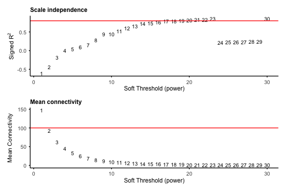
WGCNA_input$fitIndices#> Power SFT.R.sq slope truncated.R.sq mean.k. median.k.
#> 1 1 0.6079174966 3.50141118 0.596399318 146.9560935 153.8774704
#> 2 2 0.4416170866 1.30825710 0.310025081 92.8647687 98.4712976
#> 3 3 0.1875036391 0.42182558 -0.044560324 62.7435830 65.8755985
#> 4 4 0.0006527105 0.01325868 -0.007913788 44.4288278 45.8528971
#> 5 5 0.0376571372 -0.09704721 0.500936162 32.5666775 32.6806478
#> 6 6 0.0983156497 -0.18763423 0.771116065 24.5156194 23.6416683
#> 7 7 0.1523707806 -0.28033121 0.856845633 18.8516205 17.5405447
#> 8 8 0.2796083357 -0.40817464 0.913771897 14.7521903 13.1333643
#> 9 9 0.4429990671 -0.57943781 0.925464307 11.7157881 10.0753854
#> 10 10 0.4400256370 -0.75095234 0.823541850 9.4230221 7.8711980
#> 11 11 0.5218754698 -0.82163109 0.897919351 7.6631863 6.1630855
#> 12 12 0.6077162818 -0.91376318 0.906607532 6.2931499 4.9448928
#> 13 13 0.6606607188 -0.98373101 0.910304390 5.2132607 4.0171768
#> 14 14 0.7190565686 -1.05973485 0.939278066 4.3526608 3.3451586
#> 15 15 0.7332110898 -1.14995611 0.924740122 3.6600386 2.7890143
#> 16 16 0.7667399976 -1.16203458 0.950727982 3.0976378 2.3334773
#> 17 17 0.7913813258 -1.17437355 0.969907320 2.6372790 1.9212388
#> 18 18 0.7923620068 -1.24690613 0.946673462 2.2576619 1.6114542
#> 19 19 0.8007640710 -1.24215007 0.945614751 1.9425012 1.3685125
#> 20 20 0.8113157730 -1.24968682 0.931385527 1.6792151 1.1695347
#> 21 21 0.8253118995 -1.25933967 0.937684478 1.4579909 0.9823716
#> 22 22 0.8290347980 -1.25621420 0.942323196 1.2711081 0.8339364
#> 23 23 0.8522915118 -1.25593557 0.954882302 1.1124436 0.7123971
#> 24 24 0.2199325121 -2.73640004 0.141587867 0.9771045 0.6101687
#> 25 25 0.2251287342 -2.77559497 0.147911118 0.8611542 0.5240043
#> 26 26 0.2290864755 -2.81862051 0.155670771 0.7614043 0.4472175
#> 27 27 0.2321010375 -2.81265833 0.165481182 0.6752574 0.3835119
#> 28 28 0.2357808295 -2.81493861 0.175230785 0.6005850 0.3321386
#> 29 29 0.2393200648 -2.82910089 0.181344658 0.5356338 0.2918323
#> 30 30 0.8608349880 -1.48136392 0.960904775 0.4789521 0.2519321
#> max.k.
#> 1 172.027365
#> 2 124.724805
#> 3 95.501684
#> 4 75.132377
#> 5 60.522010
#> 6 50.085229
#> 7 41.989580
#> 8 35.573309
#> 9 30.401003
#> 10 26.173195
#> 11 22.676894
#> 12 19.756557
#> 13 17.296125
#> 14 15.207412
#> 15 13.422368
#> 16 11.887754
#> 17 10.561415
#> 18 9.409607
#> 19 8.405054
#> 20 7.525509
#> 21 6.752683
#> 22 6.071425
#> 23 5.472852
#> 24 5.003183
#> 25 4.584540
#> 26 4.210180
#> 27 3.874399
#> 28 3.572347
#> 29 3.299886
#> 30 3.053470
picked_power <- WGCNA_input$powerEstimate
picked_power#> [1] 19Run WGCNA:
net <- run_WGCNA(WGCNA_input,
power = picked_power,
# corType = "pearson", # other option is "bicor"
numericLabels = TRUE
)#> Allowing multi-threading with up to 24 threads.
plot_WGCNA(net, fontsize = 8)
#> Warning: The input is a data frame-like object, convert it to a matrix.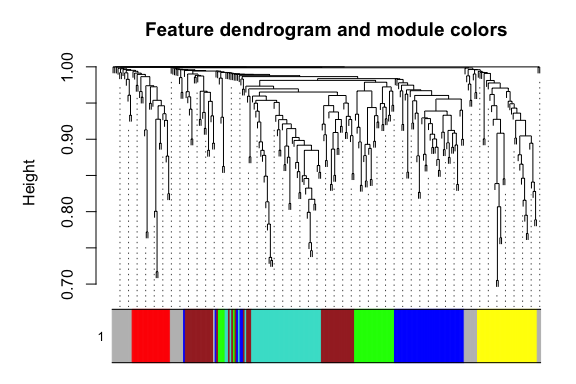
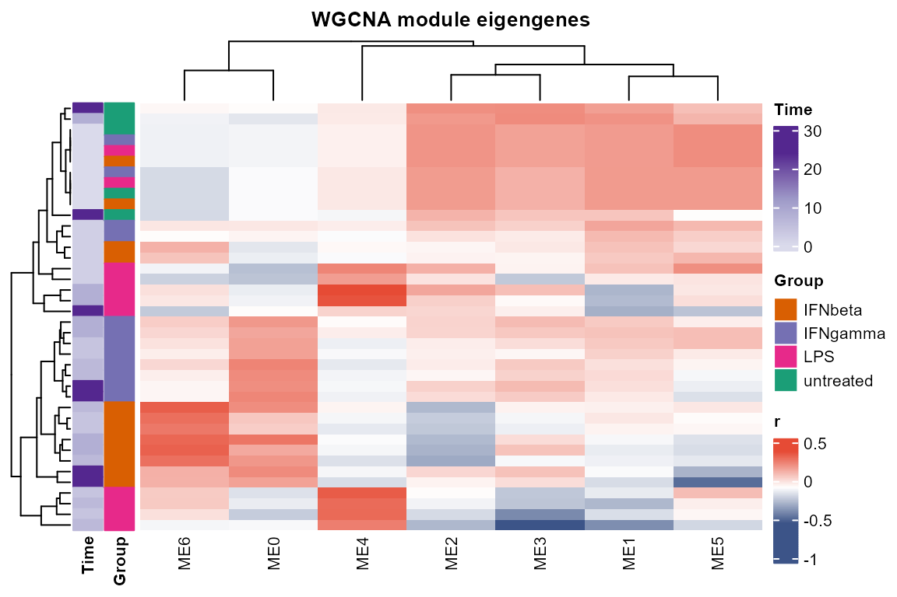
#> Warning in par(usr): argument 1 does not name a graphical parameter
#> Warning in par(usr): argument 1 does not name a graphical parameter
#> Warning in par(usr): argument 1 does not name a graphical parameter
#> Warning in par(usr): argument 1 does not name a graphical parameter
#> Warning in par(usr): argument 1 does not name a graphical parameter
#> Warning in par(usr): argument 1 does not name a graphical parameter
#> Warning in par(usr): argument 1 does not name a graphical parameter
#> Warning in par(usr): argument 1 does not name a graphical parameter
#> Warning in par(usr): argument 1 does not name a graphical parameter
#> Warning in par(usr): argument 1 does not name a graphical parameter
#> Warning in par(usr): argument 1 does not name a graphical parameter
#> Warning in par(usr): argument 1 does not name a graphical parameter
#> Warning in par(usr): argument 1 does not name a graphical parameter
#> Warning in par(usr): argument 1 does not name a graphical parameter
#> Warning in par(usr): argument 1 does not name a graphical parameter
#> Warning in par(usr): argument 1 does not name a graphical parameter
#> Warning in par(usr): argument 1 does not name a graphical parameter
#> Warning in par(usr): argument 1 does not name a graphical parameter
#> Warning in par(usr): argument 1 does not name a graphical parameter
#> Warning in par(usr): argument 1 does not name a graphical parameter
#> Warning in par(usr): argument 1 does not name a graphical parameter
#> Warning in par(usr): argument 1 does not name a graphical parameter
#> Warning in par(usr): argument 1 does not name a graphical parameter
#> Warning in par(usr): argument 1 does not name a graphical parameter
#> Warning in par(usr): argument 1 does not name a graphical parameter
#> Warning in par(usr): argument 1 does not name a graphical parameter
#> Warning in par(usr): argument 1 does not name a graphical parameter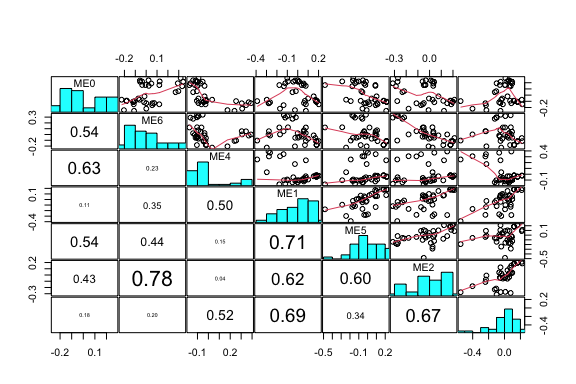
#> Warning in par(usr): argument 1 does not name a graphical parameter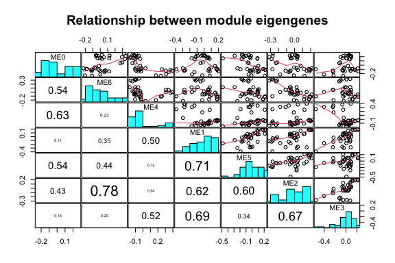
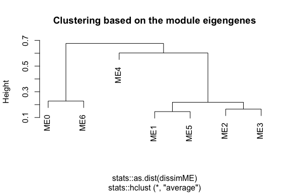
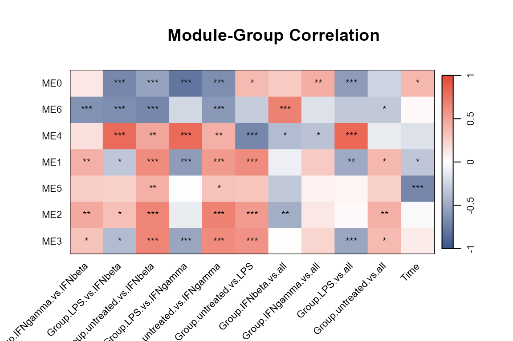
Extract modules: show module sizes
gene_module <- data.frame(Module = as.factor(net$colors)) %>%
tibble::rownames_to_column("Feature") %>%
dplyr::arrange(Module)
gene_module %>%
dplyr::group_by(Module) %>%
dplyr::summarise(n = dplyr::n())#> # A tibble: 7 × 2
#> Module n
#> <fct> <int>
#> 1 0 31
#> 2 1 47
#> 3 2 47
#> 4 3 45
#> 5 4 36
#> 6 5 29
#> 7 6 23Plot module profiles:
plot_modules_v(gene_module %>% dplyr::filter(Module != 0),
data_obj_merged, scale = TRUE,
ylabel = "Z-score of log2 (raw count + 1)",
height_ratio = 2
)
#> Warning: Removed 681 rows containing non-finite outside the scale range
#> (`stat_summary()`).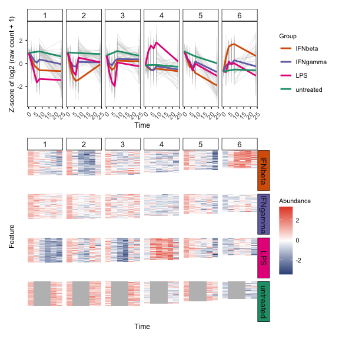
Enrichment of GO terms and drugs
Functions in TiDEomics wrap clusterProfiler::enrichGO()
and clusterProfiler::gseGO()(Yu
2024; Xu et al. 2024; Wu et al. 2021; Yu et al. 2012) to run GO
enrichment efficiently on gene sets and ranked gene list (genes ranked
by time/group contributed variance).
For ranked gene list (e.g., ranked by Time or Group contribution from
variance decomposition), use enrichGO_rank() and plot with
enrichplot::gseaplot2().
gse_group <- enrichGO_rank(var_decomp,
gene_rank_by = "Group",
OrgDb = org.Mm.eg.db,
keyType = "SYMBOL", category = "BP",
go_rank_by = "p.adjust")
#>
#> Warning in gsea(geneList = geneList, gene_sets = geneSets, minGSSize =
#> minGSSize, : There were 3591 pathways for which P-values were not calculated
#> properly due to unbalanced gene-level statistic values. For such pathways
#> pvalue, NES and log2err are set to NA. You can try to increase nPermSimple.
#> Warning in calculate_qvalue(gsea_res$pvalue): Invalid p-values detected (NA,
#> non-finite, <0, or >1). qvalue will be computed on valid p-values only.
#> Warning in enrichit::gsea_gson(geneList = geneList, exponent = exponent, : NA
#> values detected in gene set IDs. Replacing with string 'NA'.
#> Warning in enrichit::gsea_gson(geneList = geneList, exponent = exponent, :
#> Duplicate gene set IDs detected: NA... (Total 1). Unique suffixes added.
#> Removing NA ID gene sets.
enrichplot::gseaplot2(gse_group, geneSetID = 1:3, base_size = 8) 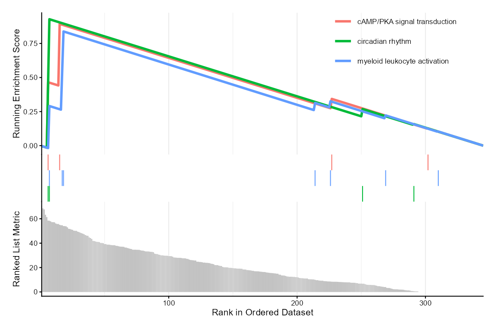
For multiple defined gene sets (e.g. WGCNA modules, DE genes by
feature classification), use enrichGO_list() and plot with
plot_GO().
Optionally, enrichGO_list() can simplify the GO results
by removing redundant terms with simplify = TRUE (default:
FALSE).
background_wgcna <- gene_module$Feature
module_list <- gene_module %>%
dplyr::filter(Module != 0) %>%
split(as.character(.$Module)) %>%
lapply(`[[`, "Feature")
go_list <- enrichGO_list(
gene_list = module_list, OrgDb = org.Mm.eg.db,
universe = background_wgcna,
pvalueCutoff = 0.9, # get more results for demonstration
qvalueCutoff = 0.9,
simplify = FALSE,
keyType = "SYMBOL"
)
#> GO category not specified. Using all three: BP, MF, CC.
#> Performing GO enrichment for category: BP
#> Processing gene list: 1
#> 'select()' returned 1:1 mapping between keys and columns
#> 'select()' returned 1:1 mapping between keys and columns
#> Warning in bitr(gene, fromType = fromType, toType = "ENTREZID", OrgDb = OrgDb):
#> 0.78% of input gene IDs are fail to map...
#> Processing gene list: 2
#> 'select()' returned 1:1 mapping between keys and columns
#> 'select()' returned 1:1 mapping between keys and columns
#> Warning in bitr(gene, fromType = fromType, toType = "ENTREZID", OrgDb = OrgDb):
#> 0.78% of input gene IDs are fail to map...
#> Processing gene list: 3
#> 'select()' returned 1:1 mapping between keys and columns
#> Warning in bitr(gene, fromType = fromType, toType = "ENTREZID", OrgDb = OrgDb):
#> 4.44% of input gene IDs are fail to map...
#> 'select()' returned 1:1 mapping between keys and columns
#> Warning in bitr(gene, fromType = fromType, toType = "ENTREZID", OrgDb = OrgDb):
#> 0.78% of input gene IDs are fail to map...
#> Processing gene list: 4
#> 'select()' returned 1:1 mapping between keys and columns
#> 'select()' returned 1:1 mapping between keys and columns
#> Warning in bitr(gene, fromType = fromType, toType = "ENTREZID", OrgDb = OrgDb):
#> 0.78% of input gene IDs are fail to map...
#> Processing gene list: 5
#> 'select()' returned 1:1 mapping between keys and columns
#> 'select()' returned 1:1 mapping between keys and columns
#> Warning in bitr(gene, fromType = fromType, toType = "ENTREZID", OrgDb = OrgDb):
#> 0.78% of input gene IDs are fail to map...
#> Processing gene list: 6
#> 'select()' returned 1:1 mapping between keys and columns
#> 'select()' returned 1:1 mapping between keys and columns
#> Warning in bitr(gene, fromType = fromType, toType = "ENTREZID", OrgDb = OrgDb):
#> 0.78% of input gene IDs are fail to map...
#> Performing GO enrichment for category: MF
#> Processing gene list: 1
#> 'select()' returned 1:1 mapping between keys and columns
#> 'select()' returned 1:1 mapping between keys and columns
#> Warning in bitr(gene, fromType = fromType, toType = "ENTREZID", OrgDb = OrgDb):
#> 0.78% of input gene IDs are fail to map...
#> Processing gene list: 2
#> 'select()' returned 1:1 mapping between keys and columns
#> 'select()' returned 1:1 mapping between keys and columns
#> Warning in bitr(gene, fromType = fromType, toType = "ENTREZID", OrgDb = OrgDb):
#> 0.78% of input gene IDs are fail to map...
#> Processing gene list: 3
#> 'select()' returned 1:1 mapping between keys and columns
#> Warning in bitr(gene, fromType = fromType, toType = "ENTREZID", OrgDb = OrgDb):
#> 4.44% of input gene IDs are fail to map...
#> 'select()' returned 1:1 mapping between keys and columns
#> Warning in bitr(gene, fromType = fromType, toType = "ENTREZID", OrgDb = OrgDb):
#> 0.78% of input gene IDs are fail to map...
#> Processing gene list: 4
#> 'select()' returned 1:1 mapping between keys and columns
#> 'select()' returned 1:1 mapping between keys and columns
#> Warning in bitr(gene, fromType = fromType, toType = "ENTREZID", OrgDb = OrgDb):
#> 0.78% of input gene IDs are fail to map...
#> Processing gene list: 5
#> 'select()' returned 1:1 mapping between keys and columns
#> 'select()' returned 1:1 mapping between keys and columns
#> Warning in bitr(gene, fromType = fromType, toType = "ENTREZID", OrgDb = OrgDb):
#> 0.78% of input gene IDs are fail to map...
#> Processing gene list: 6
#> 'select()' returned 1:1 mapping between keys and columns
#> 'select()' returned 1:1 mapping between keys and columns
#> Warning in bitr(gene, fromType = fromType, toType = "ENTREZID", OrgDb = OrgDb):
#> 0.78% of input gene IDs are fail to map...
#> Performing GO enrichment for category: CC
#> Processing gene list: 1
#> 'select()' returned 1:1 mapping between keys and columns
#> 'select()' returned 1:1 mapping between keys and columns
#> Warning in bitr(gene, fromType = fromType, toType = "ENTREZID", OrgDb = OrgDb):
#> 0.78% of input gene IDs are fail to map...
#> Processing gene list: 2
#> 'select()' returned 1:1 mapping between keys and columns
#> 'select()' returned 1:1 mapping between keys and columns
#> Warning in bitr(gene, fromType = fromType, toType = "ENTREZID", OrgDb = OrgDb):
#> 0.78% of input gene IDs are fail to map...
#> Processing gene list: 3
#> 'select()' returned 1:1 mapping between keys and columns
#> Warning in bitr(gene, fromType = fromType, toType = "ENTREZID", OrgDb = OrgDb):
#> 4.44% of input gene IDs are fail to map...
#> 'select()' returned 1:1 mapping between keys and columns
#> Warning in bitr(gene, fromType = fromType, toType = "ENTREZID", OrgDb = OrgDb):
#> 0.78% of input gene IDs are fail to map...
#> Processing gene list: 4
#> 'select()' returned 1:1 mapping between keys and columns
#> 'select()' returned 1:1 mapping between keys and columns
#> Warning in bitr(gene, fromType = fromType, toType = "ENTREZID", OrgDb = OrgDb):
#> 0.78% of input gene IDs are fail to map...
#> Processing gene list: 5
#> 'select()' returned 1:1 mapping between keys and columns
#> 'select()' returned 1:1 mapping between keys and columns
#> Warning in bitr(gene, fromType = fromType, toType = "ENTREZID", OrgDb = OrgDb):
#> 0.78% of input gene IDs are fail to map...
#> Processing gene list: 6
#> 'select()' returned 1:1 mapping between keys and columns
#> 'select()' returned 1:1 mapping between keys and columns
#> Warning in bitr(gene, fromType = fromType, toType = "ENTREZID", OrgDb = OrgDb):
#> 0.78% of input gene IDs are fail to map...
#> Merging GO enrichment results across gene lists for each category.
plot_GO(go_list$all, plot_dotplot = TRUE,
plot_emapplot = FALSE,
plot_cnetplot = FALSE,
showCategory_dotplot = 3)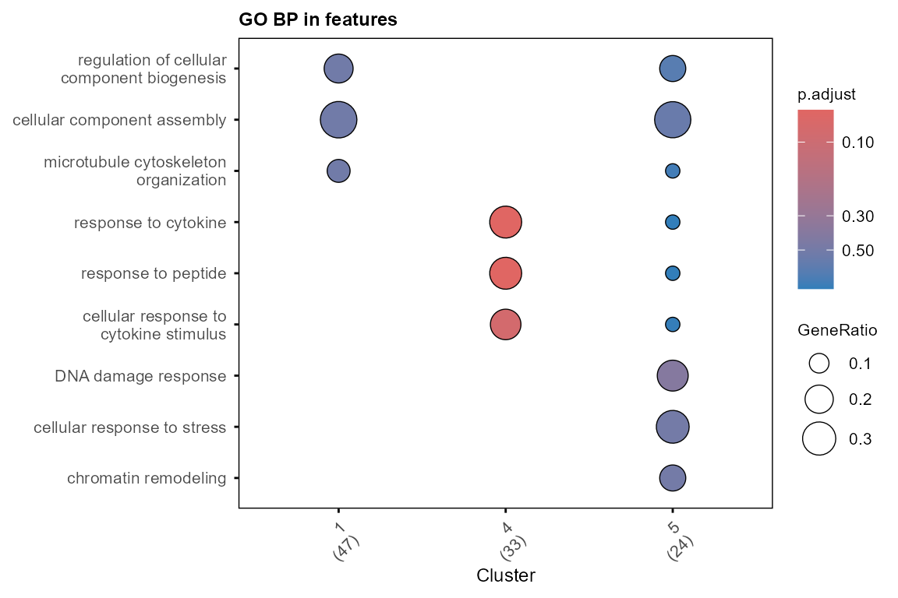
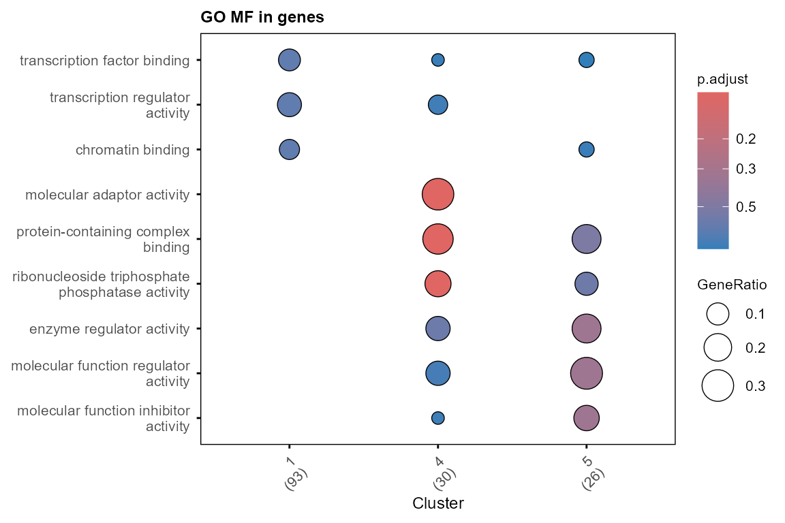
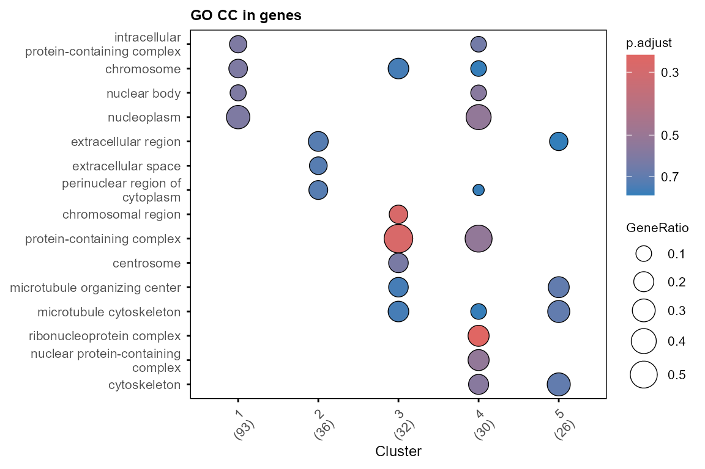
Enriched GO terms can be added to the module profile plot with
plot_modules_h(), which is similar to
plot_modules_v() above but horizontally aligned with
annotation of the modules with their top enriched GO terms. The plotting
function is adapted from ClusterGVis package (Zhang et al. 2026).
plot_modules_h(gene_module %>% dplyr::filter(Module != 0),
data_obj_merged, scale = TRUE,
ylabel = "Z-score of log2 (raw count + 1)",
go_list = go_list$all,
go_category = "BP",
heatmap_width = 6,
heatmap_height = 8
)
#> Warning: Removed 141 rows containing non-finite outside the scale range
#> (`stat_summary()`).
#> Removed 141 rows containing non-finite outside the scale range
#> (`stat_summary()`).
#> Warning: Removed 135 rows containing non-finite outside the scale range
#> (`stat_summary()`).
#> Warning: Removed 108 rows containing non-finite outside the scale range
#> (`stat_summary()`).
#> Warning: Removed 87 rows containing non-finite outside the scale range
#> (`stat_summary()`).
#> Warning: Removed 69 rows containing non-finite outside the scale range
#> (`stat_summary()`).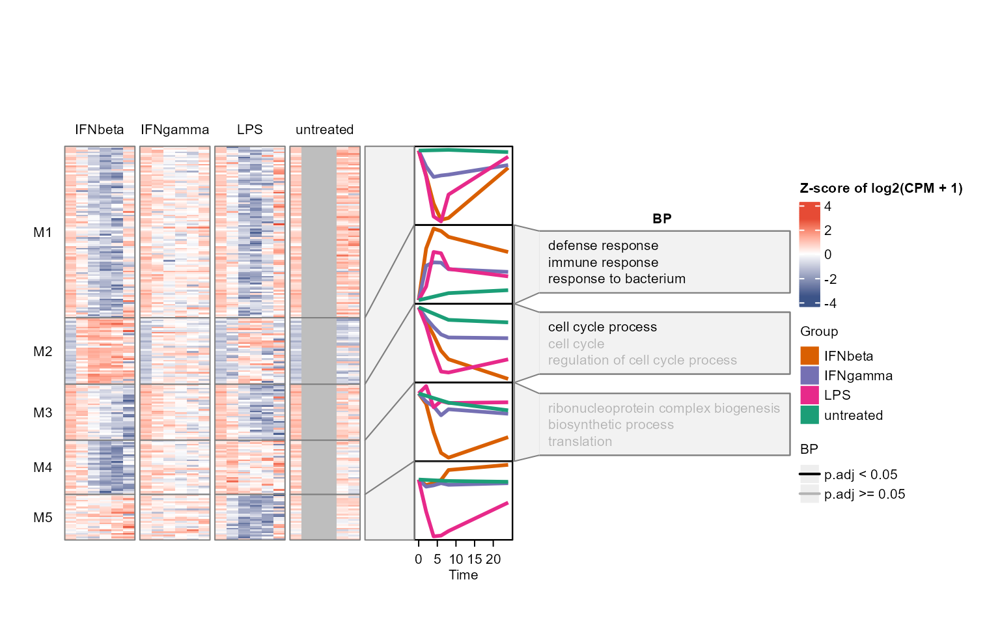
With human genes, use enrich_drug_list() for drug
enrichment with enrichR package. Input should be gene
symbols. Available drug databases can be checked with
enrichR::listEnrichrDbs().
Universal: plot features of interest
Selected features can be plotted with plot_trend(),
which shows the mean and standard deviation of replicates at each time
point. Input should be the output of calc_mean_sd(), which
calculates the mean and standard deviation of replicates for each
feature at each time point.
table_mean_sd_list <- calc_mean_sd(data_obj)
table_mean_sd_orig <- table_mean_sd_list$orig
table_mean_sd_norm <- table_mean_sd_list$norm0
plot_trend(table_mean_sd_orig, features = c("Fosb", "Il23a", "Cd69", "Actb"))
#> Group not specified. Plotting all groups: IFNbeta, IFNgamma, LPS, untreated
#> Warning: Removed 12 rows containing missing values or values outside the scale range
#> (`geom_point()`).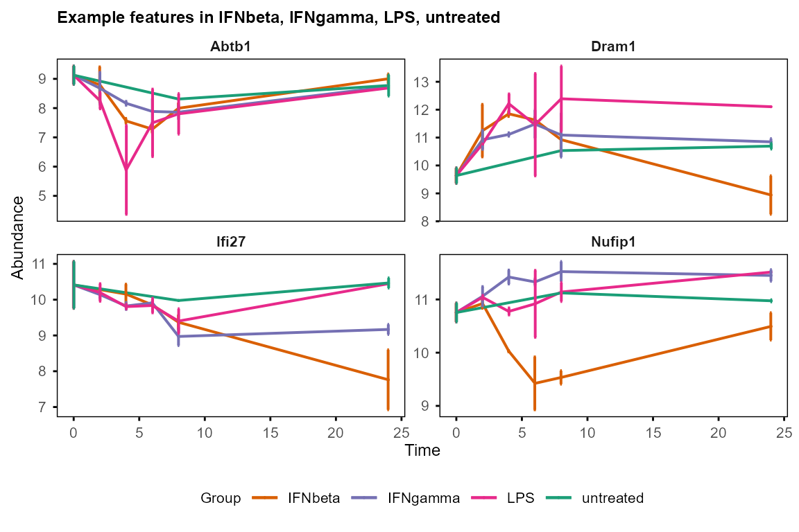
plot_trend(table_mean_sd_norm, features = c("Fosb", "Il23a", "Cd69", "Actb"))
#> Group not specified. Plotting all groups: IFNbeta, IFNgamma, LPS, untreated
#> Warning: Removed 12 rows containing missing values or values outside the scale range
#> (`geom_point()`).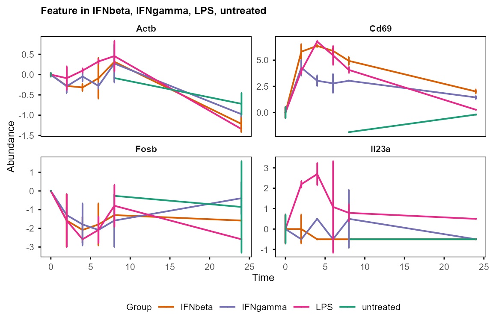
Visualisation of features with high & low residual variance justify the filtering strategy for WGCNA input.
plot_trend(table_mean_sd_orig,
features = var_decomp %>%
dplyr::arrange(desc(Residual)) %>% head(12) %>% dplyr::pull(Feature),
title = "Example features with highest residual variance"
)
#> Group not specified. Plotting all groups: IFNbeta, IFNgamma, LPS, untreated
#> Warning: Removed 36 rows containing missing values or values outside the scale range
#> (`geom_point()`).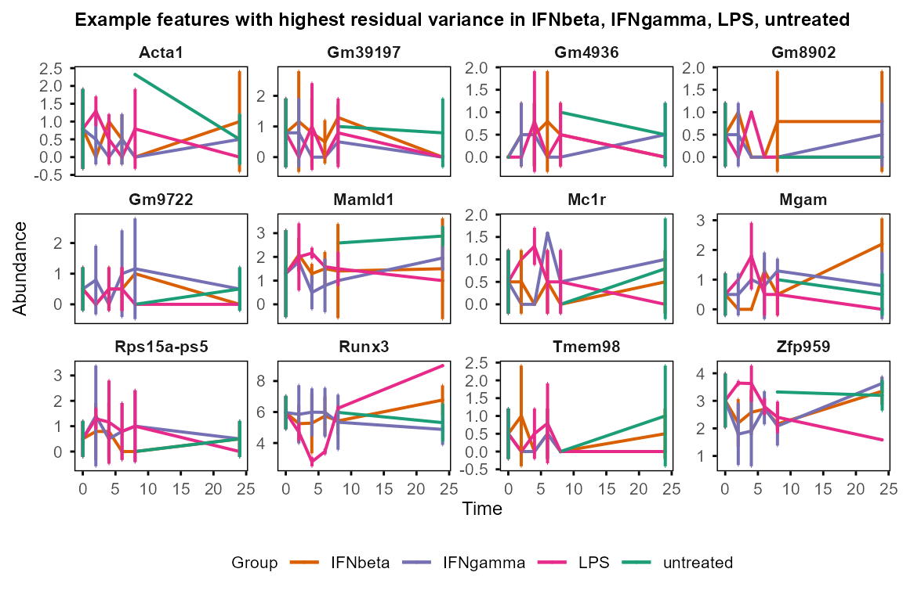
plot_trend(table_mean_sd_orig,
features = var_decomp %>%
dplyr::arrange(Residual) %>% head(12) %>% dplyr::pull(Feature),
title = "Example features with lowest residual variance"
)
#> Group not specified. Plotting all groups: IFNbeta, IFNgamma, LPS, untreated
#> Warning: Removed 36 rows containing missing values or values outside the scale range
#> (`geom_point()`).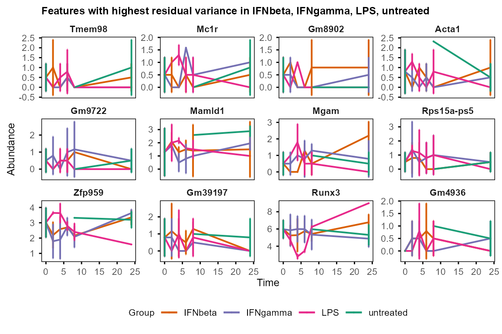
Common usage scenarios
Which features change over time in each sample group? →
DE_between_time(),calc_feature_property(),run_Trendy().Which features differ between groups at the same time point? →
DE_between_group()(For time 0, useassay = 1; for later time points, useassay = 1for original input data, or useassay = 2for change-from-baseline).What is the temporal pattern for individual features? →
run_Trendy()+summarise_Trendy()+extract_segment_trends().Which features are noisy vs biologically driven? →
decomp_variance()+plot_variance(), noisiness can be represented byResidualvariance.What co-expression modules are present and what are their temporal profiles? →
run_WGCNA()+plot_modules_h()orplot_modules_v().What biological processes are associated with the genes of interest (e.g. co-expression modules, differentially expressed genes in each sample group)? →
enrichGO_list()+plot_GO().How to normalise the data? →
normalise_to_start()for change-from-baseline analyses; apply global normalisation (quantile, median) when appropriate, beforecreate_input().How to handle missing values? →
impute_groups()forrun_Trendy; WGCNA allow NA but filter out features with too many missing values.
Session information
#> R version 4.6.0 (2026-04-24 ucrt)
#> Platform: x86_64-w64-mingw32/x64
#> Running under: Windows 11 x64 (build 26100)
#>
#> Matrix products: default
#> LAPACK version 3.12.1
#>
#> locale:
#> [1] LC_COLLATE=English_United Kingdom.utf8
#> [2] LC_CTYPE=English_United Kingdom.utf8
#> [3] LC_MONETARY=English_United Kingdom.utf8
#> [4] LC_NUMERIC=C
#> [5] LC_TIME=English_United Kingdom.utf8
#>
#> time zone: Europe/London
#> tzcode source: internal
#>
#> attached base packages:
#> [1] stats4 stats graphics grDevices utils datasets methods
#> [8] base
#>
#> other attached packages:
#> [1] org.Mm.eg.db_3.23.0 AnnotationDbi_1.75.0
#> [3] SummarizedExperiment_1.43.0 Biobase_2.73.0
#> [5] GenomicRanges_1.65.0 Seqinfo_1.3.0
#> [7] IRanges_2.47.0 S4Vectors_0.51.0
#> [9] BiocGenerics_0.59.0 generics_0.1.4
#> [11] MatrixGenerics_1.25.0 matrixStats_1.5.0
#> [13] magrittr_2.0.5 TiDEomics_0.99.0
#> [15] BiocStyle_2.41.0
#>
#> loaded via a namespace (and not attached):
#> [1] segmented_2.2-1 fs_2.1.0
#> [3] bitops_1.0-9 enrichplot_1.33.0
#> [5] httr_1.4.8 RColorBrewer_1.1-3
#> [7] doParallel_1.0.17 ggsci_5.0.0
#> [9] dynamicTreeCut_1.63-1 tools_4.6.0
#> [11] backports_1.5.1 utf8_1.2.6
#> [13] R6_2.6.1 lazyeval_0.2.3
#> [15] GetoptLong_1.1.1 withr_3.0.2
#> [17] gridExtra_2.3 preprocessCore_1.75.0
#> [19] WGCNA_1.74 cli_3.6.6
#> [21] textshaping_1.0.5 scatterpie_0.2.6
#> [23] labeling_0.4.3 sass_0.4.10
#> [25] S7_0.2.2 ggridges_0.5.7
#> [27] pbapply_1.7-4 askpass_1.2.1
#> [29] pkgdown_2.2.0 systemfonts_1.3.2
#> [31] yulab.utils_0.2.4 gson_0.1.0
#> [33] foreign_0.8-91 DOSE_4.7.0
#> [35] limma_3.69.0 rstudioapi_0.18.0
#> [37] impute_1.87.0 RSQLite_2.4.6
#> [39] gridGraphics_0.5-1 shape_1.4.6.1
#> [41] gtools_3.9.5 crosstalk_1.2.2
#> [43] car_3.1-5 dplyr_1.2.1
#> [45] GO.db_3.23.1 Matrix_1.7-5
#> [47] abind_1.4-8 PCAtools_2.25.0
#> [49] lifecycle_1.0.5 yaml_2.3.12
#> [51] carData_3.0-6 qvalue_2.45.0
#> [53] gplots_3.3.0 SparseArray_1.13.0
#> [55] grid_4.6.0 blob_1.3.0
#> [57] promises_1.5.0 dqrng_0.4.1
#> [59] crayon_1.5.3 ggtangle_0.1.2
#> [61] lattice_0.22-9 beachmat_2.29.0
#> [63] cowplot_1.2.0 KEGGREST_1.53.0
#> [65] pillar_1.11.1 knitr_1.51
#> [67] ComplexHeatmap_2.29.0 rjson_0.2.23
#> [69] boot_1.3-32 codetools_0.2-20
#> [71] glue_1.8.1 ggiraph_0.9.6
#> [73] fontLiberation_0.1.0 ggfun_0.2.0
#> [75] data.table_1.18.2.1 treeio_1.37.0
#> [77] vctrs_0.7.3 png_0.1-9
#> [79] Rdpack_2.6.6 gtable_0.3.6
#> [81] cachem_1.1.0 xfun_0.57
#> [83] rbibutils_2.4.1 S4Arrays_1.13.0
#> [85] mime_0.13 reformulas_0.4.4
#> [87] survival_3.8-6 aisdk_1.1.0
#> [89] iterators_1.0.14 statmod_1.5.1
#> [91] nlme_3.1-169 ggtree_4.3.0
#> [93] fontquiver_0.2.1 bit64_4.8.0
#> [95] bslib_0.10.0 irlba_2.3.7
#> [97] KernSmooth_2.23-26 otel_0.2.0
#> [99] rpart_4.1.27 colorspace_2.1-2
#> [101] DBI_1.3.0 Hmisc_5.2-5
#> [103] nnet_7.3-20 tidyselect_1.2.1
#> [105] processx_3.9.0 bit_4.6.0
#> [107] compiler_4.6.0 httr2_1.2.2
#> [109] htmlTable_2.5.0 fontBitstreamVera_0.1.1
#> [111] randtests_1.0.2 desc_1.4.3
#> [113] DelayedArray_0.39.0 plotly_4.12.0
#> [115] bookdown_0.46 checkmate_2.3.4
#> [117] scales_1.4.0 caTools_1.18.3
#> [119] callr_3.7.6 rappdirs_0.3.4
#> [121] stringr_1.6.0 digest_0.6.39
#> [123] minqa_1.2.8 rmarkdown_2.31
#> [125] XVector_0.53.0 htmltools_0.5.9
#> [127] pkgconfig_2.0.3 base64enc_0.1-6
#> [129] lme4_2.0-1 umap_0.2.10.0
#> [131] sparseMatrixStats_1.25.0 fastmap_1.2.0
#> [133] rlang_1.2.0 GlobalOptions_0.1.4
#> [135] htmlwidgets_1.6.4 shiny_1.13.0
#> [137] DelayedMatrixStats_1.35.0 ggh4x_0.3.1
#> [139] farver_2.1.2 jquerylib_0.1.4
#> [141] jsonlite_2.0.0 BiocParallel_1.47.0
#> [143] GOSemSim_2.39.0 BiocSingular_1.29.0
#> [145] Formula_1.2-5 ggplotify_0.1.3
#> [147] patchwork_1.3.2 Rcpp_1.1.1-1.1
#> [149] gdtools_0.5.0 ape_5.8-1
#> [151] ggnewscale_0.5.2 reticulate_1.46.0
#> [153] stringi_1.8.7 MASS_7.3-65
#> [155] plyr_1.8.9 shinyFiles_0.9.3
#> [157] parallel_4.6.0 ggrepel_0.9.8
#> [159] Biostrings_2.81.0 splines_4.6.0
#> [161] circlize_0.4.18 igraph_2.3.0
#> [163] ggpubr_0.6.3 fastcluster_1.3.0
#> [165] enrichit_0.1.4 ggsignif_0.6.4
#> [167] reshape2_1.4.5 ScaledMatrix_1.21.0
#> [169] evaluate_1.0.5 BiocManager_1.30.27
#> [171] nloptr_2.2.1 foreach_1.5.2
#> [173] tweenr_2.0.3 httpuv_1.6.17
#> [175] tidyr_1.3.2 openssl_2.4.0
#> [177] purrr_1.2.2 polyclip_1.10-7
#> [179] clue_0.3-68 ggplot2_4.0.3
#> [181] Trendy_1.35.0 ggforce_0.5.0
#> [183] rsvd_1.0.5 broom_1.0.12
#> [185] xtable_1.8-8 tidytree_0.4.7
#> [187] RSpectra_0.16-2 tidydr_0.0.6
#> [189] rstatix_0.7.3 later_1.4.8
#> [191] viridisLite_0.4.3 ragg_1.5.2
#> [193] tibble_3.3.1 aplot_0.2.9
#> [195] clusterProfiler_4.21.0 memoise_2.0.1
#> [197] cluster_2.1.8.2